Motionator
User Guide
Animate SVG without code — 4K video, Lottie and animated SVG
Contents
- Installation
- Quick start: your first animation
- Core concepts
- Preparing SVG files
- The workspace at a glance
- Menu reference
- Workspaces and docking panels
- Layers panel
- Composition panel
- Properties panel
- Presets
- Preset reference
- Keyframes and easing
- Easing reference
- Graph Editor
- Motion paths
- Trim Paths: drawing lines on
- Effects and what each export supports
- Saving your own presets
- Audio
- Text layers and per-letter animation
- Generator layers: confetti, counters, landscapes and more
- 2.5D presets, brush reveals and render effects
- Glow
- Animation principles for motion design
- Video export: Render Queue
- Lottie export
- Animated SVG export
- Using animations on websites and in apps
- Making motion backgrounds for microstock
- Microstock tools: checks, metadata and batches
- Projects, auto-save and recovery
- Tutorial: logo reveal with sound
- Tutorial: seamless 4K stock background
- Tutorial: animated icon for a website
- Tutorial: loading spinner for Lottie
- Tutorial: lower third with transparency
- Tutorial: square social media post
- AI agents: Ask AI and the MCP server
- Keyboard shortcuts
- Troubleshooting and FAQ
- Glossary
- About and licences
Welcome
This guide explains every part of Motionator, from the first import to a finished 4K clip, a Lottie file or an animated SVG for your website. Each chapter has real screenshots, and the tutorials use sample files you can download and follow step by step.
A logo drawn on with Trim Paths, staggered letters and a wipe (sample: logo.motionator).
What you can make#
Stock footage
Seamless 4K backgrounds in H.264 or ProRes, checked for loops and for the usual stock-site rules.
Logo animation
Draw-on strokes, pops, wipes and colour flashes, with a soundtrack.
Web animation
Lottie JSON for lottie-web and apps, or one self-contained animated SVG.
Your own presets
Turn any keyframed layer into a preset and reuse it in every project.
How Motionator works#
You prepare artwork in Illustrator, Inkscape, Figma or any vector editor and save it as SVG. Every group or path with a name (an id in the SVG) becomes a layer you can animate. You then animate layers in two ways, which can be combined:
- Presets: ready-made motions (Fade In, Bounce, Orbit, Draw On…) applied with a double-click. Ideal for fast, consistent results.
- Keyframes: set values at points in time, with easing, a graph editor and curved motion paths, like in After Effects.
The same renderer draws the preview and the exported video, so what you see is what you get. Lottie and animated SVG exports are checked against this renderer and each export shows a compatibility report before saving.
01Installation
Install once, then open SVG files or projects straight from Explorer.
Requirements#
| Item | Requirement |
|---|---|
| System | Windows 10 or 11, 64-bit |
| Memory | 8 GB RAM; 16 GB recommended for 4K export with motion blur |
| Display | 1600×900 or larger |
| WebView2 | Included in Windows 11; the installer adds it on Windows 10 if missing |
| FFmpeg | Bundled with the installer (used for video and audio export) |
Installing#
- Run
Motionator_0.1.0_x64-setup.exe. Choose English or Bahasa Indonesia for the installer. - Follow the pages and click Install. Motionator installs for your user account only, so no administrator rights are needed.
- Optionally create a desktop shortcut, then start Motionator from the last page or the Start menu.
The installer registers .motionator project files: double-clicking one in Explorer opens it in Motionator. You can also right-click an .svg file and choose Open with ▸ Motionator to import it straight away.
First launch and language#
Motionator follows the Windows display language: Indonesian on an Indonesian Windows, English otherwise. Change it any time in Edit ▸ Preferences (Bahasa / Language); the whole interface switches at once, including preset descriptions and export reports.

The status bar shows FFmpeg with a check mark when video export is ready. If it shows a warning, reinstall Motionator; video export needs FFmpeg, everything else works without it.
02Quick start: your first animation
Five minutes from an SVG to a finished MP4.
- Import an SVG. Press Ctrl+I, choose File ▸ Import SVG…, or simply drag an
.svgfile onto the window. Trysamples/logo.svg. - Select a layer. Click it in the Layers panel or directly on the canvas with the Selection tool V.
- Apply a preset. In the Presets panel, hover a preset to preview it, then double-click it. Enter presets start at the playhead (the blue line in the timeline).
- Play it. Press Space or the round play button under the canvas. The green bar on the ruler shows frames already cached for smooth playback.
- Adjust timing. In the Timeline, drag a preset bar to move it and drag its right edge to change its duration.
- Export. Click the red Export button (or Ctrl+M), choose a format and size in the Render Queue, pick the output file, then press Render.
- Save the project with Ctrl+S. The
.motionatorfile contains your SVG, so it can be moved and shared as one file.

Everything you do can be undone with Ctrl+Z and redone with Ctrl+Shift+Z. A whole drag is one undo step.
03Core concepts
Six ideas that explain how everything in Motionator behaves.
1. The composition#
A composition is the frame you animate in: a size in pixels, a frame rate, a duration and a background. Everything you export is a render of the composition. A project has one composition; you can import several SVG files into it.
| Frame rate | Typical use |
|---|---|
| 23.976 / 24 fps | Cinematic footage; matches film and most stock clips shot on cameras. |
| 25 / 50 fps | PAL regions (Europe, Indonesia broadcast). |
| 29.97 / 30 fps | Web video, social media, NTSC regions. A safe default. |
| 59.94 / 60 fps | Very smooth motion, UI demos, fast-moving graphics. |
Time is shown as a timecode 0:00:02:15 = hours : minutes : seconds : frames, so at 30 fps 0:00:02:15 is 2.5 seconds. Below it the timeline shows the absolute frame number. Internally Motionator counts time in very fine ticks, so changing the frame rate never shifts your animation.
2. Layers and the hierarchy#
Layers form a tree that mirrors the groups in your SVG. A child's transform is relative to its parent: if Wordmark moves 100 px right, every letter inside moves with it, and each letter can still have its own animation on top. This is why good grouping in your design tool matters so much: animate a group to move parts together, animate the children for detail.
Opacity multiplies down the tree (a child at 50 % inside a parent at 50 % shows at 25 %). Effects such as Blur, Tint and Reveal apply to the layer and everything inside it.
3. The anchor point#
Rotation, scale and skew happen around the anchor point (the red crosshair on the canvas). The same 30° rotation looks completely different with the anchor in the centre or on a corner. Position moves the anchor point, so a layer's Position is where its anchor sits in the parent.
- A door or a pendulum (Swing): anchor on the hinge or the top.
- A clock hand (Tick, Spin): anchor at the end that stays fixed.
- A bouncing ball with squash: anchor at the bottom so it squashes onto the ground.
- A logo popping in: anchor in the centre.
4. Transform order#
Every frame, each layer is placed in this order: the shape is offset so its anchor point is at the origin, then scaled, skewed and rotated around it, then moved to Position, and finally put inside its parent. You never have to think about this while working, but it explains why scaling never moves the anchor point and why rotating a parent swings its children around the parent's anchor.
5. The rest pose#
The rest pose is how the layer looks in your SVG file: its original position, size and rotation. Presets are relative to it: Slide In ← always ends exactly at the rest pose, wherever that is. Reset Transform brings a layer back to it, and Save as Preset stores motion as changes from it, which is why your presets work on other layers.
6. How a frame is calculated#
- Start from the rest pose (or the keyframed value, if the property has keyframes).
- Enter and Exit presets that are active at this time replace the value; the one that starts last wins.
- Loop and Emphasis presets add their motion on top.
- The parent's result is applied, then the layer is drawn with its effects.
Because of this order you can freely mix methods: keyframe a logo's position across the screen, add Fade In at the start and Float for the whole clip, and all three work together.
Everything is non-destructive: presets are calculated live and never baked into your project unless you choose Bake to Keyframes. Delete a preset and the layer is exactly as before.
04Preparing SVG files
Good layer names in your design tool make animation easy.
Named elements become layers#
Motionator makes a layer for every group and path that has an id. Elements without an id stay part of their parent layer, so they move together. Nesting is kept: a named group inside another named group becomes a child layer, and moving the parent moves the child.
| Tool | How to give elements ids |
|---|---|
| Adobe Illustrator | Name layers and sub-layers in the Layers panel. Export with File ▸ Export ▸ Export As… ▸ SVG and Object IDs: Layer Names. Illustrator writes spaces as _x20_; Motionator shows them as spaces again. |
| Inkscape | Set the ID in Object Properties (Ctrl+Shift+O), or rename layers. Save as Plain SVG or Inkscape SVG. |
| Figma | Layer names become ids when you export a frame as SVG with Include "id" attribute turned on. |
| Any editor | Add id="Name" to the <g> or <path> elements in a text editor. |
Checklist before importing#
- Outline text (Create Outlines / Object to Path). Live text is not drawn; for animated titles, make the text in Motionator with Layer ▸ New Text instead.
- Use strokes for line art you want to draw on with Trim Paths. Filled shapes cannot be drawn on.
- Group what moves together and name the group, e.g. a wheel with its spokes.
- Avoid filters and raster images if you also need Lottie: they render in video but cannot be exported to Lottie.
- Keep ids unique. Duplicate ids are reported; only the first becomes a layer.
Import warnings#
After an import the status bar shows how many layers were found. If something needs attention, a warning appears there; click it to see the list. Warnings never stop the import.
| Warning | What to do |
|---|---|
| Text not outlined | Convert text to outlines and import again, or make the text with Layer ▸ New Text to animate it letter by letter. |
| Filters (blur, shadow…) | Fine for video; slows 4K rendering and is left out of Lottie. |
| Patterns / blend modes | Shown in video; Lottie support is limited. |
| Raster images | Blurry when scaled up; makes Lottie files larger. |
| Duplicate ids | Rename them in your editor so each part can be animated. |
| No ids | The whole SVG becomes one layer; name your layers. |
A newly imported SVG is centred in the composition at its own size, scaled down only if it is larger than the composition. Each layer's anchor point starts at the centre of its box.
A well-structured SVG#
This is the structure of samples/logo.svg. Groups with ids become layers that can move as a unit; paths with ids inside them can be animated on their own. Strokes are used where the line should draw on.
<svg xmlns="http://www.w3.org/2000/svg" viewBox="0 0 600 220">
<g id="Mark"> <!-- layer: the symbol -->
<circle id="Ring" … fill="none" stroke="#e2381d" stroke-width="14"/>
<path id="Wave" … fill="none" stroke="#7c3aed" stroke-width="12"/>
<circle id="Dot" … fill="#111827"/>
</g>
<g id="Wordmark"> <!-- layer: the name -->
<path id="Letter_M" …/> <path id="Letter_O" …/>
<path id="Letter_V" …/> <path id="Letter_E" …/>
</g>
<path id="Underline" … stroke="#e2381d"/>
</svg>Step by step: Adobe Illustrator#
- Put each part you want to animate on its own layer or sub-layer, and name it in the Layers panel (double-click the name).
- Select text and choose Type ▸ Create Outlines Ctrl+Shift+O. Keep a copy of the editable file.
- Expand appearances and brushes you want as plain shapes (Object ▸ Expand Appearance), but keep strokes as strokes for Trim Paths.
- Set the artboard to the area of the artwork (Object ▸ Artboards ▸ Fit to Artwork Bounds).
- File ▸ Export ▸ Export As…, format SVG, tick Use Artboards. In the options: Styling Presentation Attributes, Font Convert to Outlines, Images Embed, Object IDs Layer Names, Decimal 2, untick Minify.
Step by step: Figma#
- Build the artwork inside a frame. Name layers and groups in the layers list.
- Select text and use Outline stroke/Flatten only where needed; Figma exports text as paths when Outline text is on.
- Select the frame, add an export setting SVG, open its options and tick Include "id" attribute and Outline text.
- Export. Auto-layout frames become plain groups, which is fine.
Step by step: Inkscape#
- Group parts with Ctrl+G and set each group's ID in Object ▸ Object Properties, then click Set.
- Convert text with Path ▸ Object to Path Shift+Ctrl+C.
- Document Properties ▸ Resize to content, then Save As ▸ Plain SVG.
Size and resolution#
SVG is resolution-independent: a 600 px wide logo renders razor-sharp in a 4K composition, because every frame is drawn from the vectors. The viewBox of the file only sets the starting size. Scale the SVG root layer up in Motionator rather than exporting a bigger SVG.
Very complex files (tens of thousands of paths, heavy blur filters, large embedded photos) render slowly at 4K. Simplify paths (Illustrator: Object ▸ Path ▸ Simplify) and avoid unnecessary filters.
05The workspace at a glance
An After Effects–style layout: panels around a central canvas.
123456789101112- 1Menu bar: every command, with its shortcut.
- 2Toolbar: Selection, Hand, Zoom, Rotation, Anchor Point and Pen tools, and Snapping.
- 3Workspaces: Simple, Advanced and Minimal.
- 4Export: adds the composition to the Render Queue.
- 5Layers: the layer tree of your SVGs.
- 6Composition: the canvas, where you select and move layers.
- 7Transport: play, step, loop, current time and cache.
- 8Properties: transform, effects, Trim Paths and presets of the selected layer.
- 9Timeline: preset bars, keyframes and the Graph Editor; the Render Queue is its neighbour tab.
- 10Presets: the preset library with search and live previews.
- 11Align: align the selected layer to the composition.
- 12Status bar: messages, import warnings and the FFmpeg check.
Menus#
The menus list every command with its keyboard shortcut. The File menu holds projects, imports and the web exports; Animation holds preset and keyframe commands; Window shows and arranges panels.


Toolbar and tools#

| Tool | Key | Use |
|---|---|---|
| Selection | V | Click a layer on the canvas to select it; drag to move it. Hold Shift to move only horizontally or vertically; with Snapping on it sticks to edges and centres (Ctrl to move freely). |
| Hand | H | Drag to pan the canvas. Holding Space gives the Hand tool temporarily. |
| Zoom | Z | Click to zoom in at that point; Alt-click zooms out. |
| Rotation | W | Drag around the selected layer to rotate it about its anchor point; Shift snaps to 45°. |
| Anchor Point | Y | Drag to move the anchor point (the pivot for rotation and scale) without moving the layer. |
| Pen | G | Shows the motion path; click a position keyframe to switch it between a smooth curve and a sharp corner. |
With the mouse wheel over the canvas: scroll pans, Shift+scroll pans sideways, and Ctrl+scroll or Alt+scroll zooms around the pointer.
06Menu reference
Every command in every menu, what it does and its shortcut.
File menu#
| Command | Shortcut | What it does |
|---|---|---|
| New Project | Ctrl+Alt+N | Starts an empty project (asks to save changes first). |
| Open Project… | Ctrl+O | Opens a .motionator file. |
| Save / Save As… | Ctrl+S Ctrl+Shift+S | Saves the project; Save As picks a new name. |
| Import SVG… | Ctrl+I | Adds an SVG file to the composition as a new root layer. |
| Import Audio… | Ctrl+Alt+I | Sets the project's soundtrack (replaces the current one). |
| Export Animated SVG… | Ctrl+Alt+G | Opens the animated SVG export dialog. |
| Export Lottie… | Ctrl+Alt+L | Opens the Lottie export dialog. |
| Exit | Ctrl+Q | Closes Motionator (asks to save changes). |
Edit menu#

| Command | Shortcut | What it does |
|---|---|---|
| Undo / Redo | Ctrl+Z Ctrl+Shift+Z Ctrl+Y | Steps back and forward through every change, including preset and keyframe edits. |
| Delete | Delete | Deletes what is selected: keyframes, a preset bar, the audio track or a whole SVG. |
| Deselect All | Ctrl+Shift+A | Clears the selection; the Properties panel then shows the composition. |
| Preferences… | Ctrl+Alt+; | Language, theme and auto-save. |
Composition menu#
| Command | Shortcut | What it does |
|---|---|---|
| Composition Settings… | Ctrl+K | Shows the composition settings in the Properties panel. |
| Add to Render Queue | Ctrl+M | Adds the composition to the Render Queue and shows it. |
Layer menu#
| Command | Shortcut | What it does |
|---|---|---|
| Center Anchor Point | Ctrl+Alt+Home | Moves the anchor to the centre of the layer without moving the layer. |
| Reset Transform | Returns the selected layer to its rest pose. |
Animation menu#
| Command | Shortcut | What it does |
|---|---|---|
| Apply Preset… | Shows the Presets panel; double-click a preset there. | |
| Bake to Keyframes | Turns the layer's presets into keyframes. | |
| Save as Preset… | Saves the layer's keyframes as your own preset. | |
| Easy Ease / In / Out | F9 Shift+F9 Ctrl+Shift+F9 | Eases the selected keyframes. |
| Previous / Next Keyframe | J K | Moves the playhead to the nearest keyframe of the selected layer. |
| Reveal Animated Properties | U | Opens all layers that have keyframes, showing only animated properties. |
| Graph Editor | Shift+F3 | Toggles the Graph Editor in the timeline. |
View menu#
| Command | Shortcut | What it does |
|---|---|---|
| Grid | Ctrl+' | Shows a grid over the composition. |
| Transparency Grid | Shows a chequerboard behind transparent compositions. | |
| Safe Area | Shows action-safe and title-safe margins for video. | |
| Snapping | Ctrl+Shift+; | Turns snapping on or off (also in the toolbar): dragged layers and anchor points stick to the composition and to other layers. See Composition panel ▸ Snapping. |
| Zoom In / Out | . , | Zooms the canvas. |
| Actual Size / Fit | / Shift+/ | 100 % zoom, or fit the composition to the panel. |
Window menu#
| Command | Shortcut | What it does |
|---|---|---|
| Workspace: Simple / Advanced / Minimal | Shift+F10 Shift+F11 Shift+F12 | Switches workspace. |
| Dark / Darker Theme | Changes the colour theme. | |
| Panels | Composition, Layers, Timeline, Render Queue, Properties, Presets, Align: shows the panel (opening it again if it was closed). | |
| Reset Layout | Restores the default arrangement of the current workspace. | |
| Saved Layouts… | Saves, applies and deletes named arrangements. |
Help menu#
| Command | Shortcut | What it does |
|---|---|---|
| About Motionator | Version, licences and the open-source components. |
Greyed-out items need a selection first (for example a layer for Bake to Keyframes, or keyframes for Easy Ease).
07Workspaces and docking panels
Arrange panels the way you work, and keep several layouts.
Simple, Advanced and Minimal#
| Workspace | Key | For |
|---|---|---|
| Simple | Shift+F10 | Working with presets: the timeline shows one row per layer with preset bars. |
| Advanced | Shift+F11 | Keyframes: layers twirl open to show every property, keyframes and the Graph Editor. |
| Minimal | Shift+F12 | Reviewing: just the canvas and the timeline. |

Moving panels#
Drag a panel by its tab. A blue overlay shows where it will land: the outer quarter of a panel group docks it on that side, the middle adds it as a tab. Release to drop it there, or press Esc to cancel. Drag the gaps between panels to resize them.

Close a panel with the × on its tab and bring it back from the Window menu. Each workspace remembers its own arrangement. Window ▸ Reset Layout restores the default, and Window ▸ Saved Layouts… keeps arrangements under a name.


Themes: Window ▸ Dark Theme or Darker Theme. The choice is remembered.
08Layers panel

- Header: the selected layer's name, kind, size and SVG id.
- Search: type to filter layers by name.
- Kinds: SVG is the imported file (the root layer), Group and Path are named elements inside it. Arrows fold groups.
- Blue dot: the layer has presets or keyframes.
- Buttons: import another SVG, and delete the selected SVG (only whole SVG files can be deleted; their parts belong to the file).
A composition can hold several SVG files; each becomes its own root layer. Later imports appear on top.
09Composition panel

Canvas#
The composition is the white (or chequered, when transparent) rectangle; the dark area around it is the pasteboard. The selected layer shows a red box that follows its rotation, eight handles and its anchor point. Hovering a layer outlines it in blue.
Playback controls#
| Control | Key | Action |
|---|---|---|
| Current time / duration | Timecode in hours:minutes:seconds:frames. | |
| Go to start / end | Home End | |
| Previous / next frame | Page Up Page Down | Also the arrow keys; with Shift they move 10 frames. |
| Play / Pause | Space | Plays in real time with sound (if the project has audio). |
| Loop | Repeat playback from the start. | |
| Cache | How many frames are ready; cached frames play smoothly. |
Viewer options#
- Zoom: Fit, or a fixed percentage. Keys: . zoom in, , zoom out, / 100 %, Shift+/ fit.
- Resolution: Full, Half, Third, Quarter. Lower resolutions preview faster on large compositions.
- Grid Ctrl+', transparency grid and safe areas (action and title safe).
- Frame Render Time: how long the last frame took to draw.
Snapping#
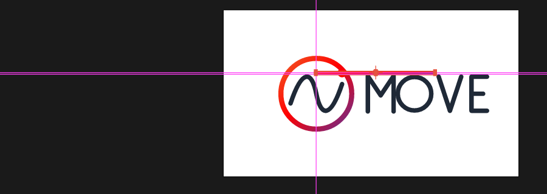
With Snapping ticked in the toolbar (or View ▸ Snapping Ctrl+Shift+;), a layer you drag with the Selection tool sticks to useful lines as soon as it comes within 8 screen pixels of them. A magenta guide shows each line it snapped to.
| Dragging | What snaps | Snaps to |
|---|---|---|
| A layer (Selection tool V) | Its left, centre and right edges, top, middle and bottom, and its anchor point | The composition's edges and centre lines; the edges and centres of every other layer |
| The anchor point (Anchor Point tool Y) | The anchor point | The layer's own corners, edges and centre; the composition's edges and centre |
- Layers inside the one you drag, and the groups it sits in, are not used as targets: they move with it.
- Hold Ctrl during a drag to invert snapping: move freely when Snapping is on, or snap once when it is off.
- Shift still locks the drag to one axis; snapping then only works along that axis.
- Snapping uses the layers' boxes at the current frame, so animated layers snap to where they are now.
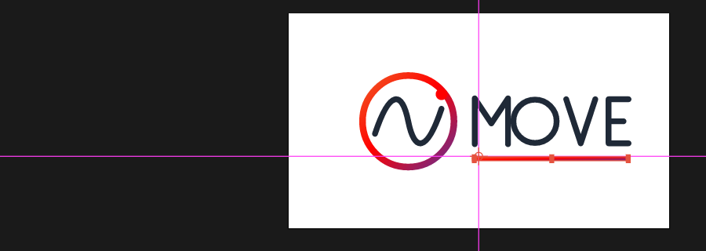
To centre a logo exactly, drag it near the middle: its centre snaps to the composition's centre lines. The Align panel does the same with one click.
10Properties panel
Exact values for the selected layer, or the composition settings when nothing is selected.


Editing values#
Blue numbers can be dragged left and right to scrub the value, or clicked to type a number (press Enter to confirm, Esc to cancel). The clock icon is the stopwatch: turn it on to animate the property with keyframes (see Keyframes).
Layer Transform#
| Property | Meaning |
|---|---|
| Anchor Point | The pivot for rotation, scale and skew, in the parent's coordinates. The crosshair button centres it on the layer. |
| Position | Where the anchor point sits (x, y). |
| Scale | Width and height in percent. The chain button keeps the proportions. |
| Rotation | Degrees, clockwise. |
| Opacity | 0–100 %. |
| Skew / Skew Axis | Slants the layer along an axis (degrees), like in After Effects. |
Reset returns the transform to the rest pose of the SVG (effects are kept). Layer ▸ Center Anchor Point Ctrl+Alt+Home and Layer ▸ Reset Transform do the same from the menu.
Effects#
| Effect | Meaning |
|---|---|
| Blur | Gaussian blur radius in the layer's own pixels (it grows with the layer's scale). |
| Tint | How much of the tint colour replaces the layer's colours (0–100 %). Pick the colour with Tint colour. |
| Reveal | The visible part of the layer's box (100 % = all), wiping in from the side chosen in Reveal from: left, right, top, bottom, iris (circle) or centre. |
Composition settings#
Click an empty part of the canvas (or press Ctrl+K) to edit the composition: name, size in pixels, frame rate (23.976 to 60 fps), duration in seconds and the background colour. Tick Transparent for a transparent background, needed for ProRes 4444 or VP9 with alpha.
Align panel#
The six buttons align the selected layer's box to the left, centre or right and to the top, middle or bottom of the composition. If Position is keyframed, the change is keyed at the playhead.
11Presets
99 ready-made motions in four categories, applied with a double-click.
The four categories#
| Category | What it does | Where it is placed |
|---|---|---|
| Enter | Brings the layer in: it ends in the layer's rest pose. | Starts at the playhead. |
| Exit | Takes the layer out: it starts from the rest pose. | Ends at the end of the composition. |
| Loop | Repeats for as long as the bar lasts and loops seamlessly. | Covers the whole composition. |
| Emphasis | A short accent that returns to where it started. | Starts at the playhead. |
Applying a preset#

- Select a layer (in the Layers panel, the timeline or on the canvas).
- For Enter and Emphasis presets, move the playhead to where the motion should start.
- Find the preset: type in Search presets or open a category. Hover to preview.
- Double-click the preset. It appears as a bar in the timeline and in the Preset section of the Properties panel.
A layer can have any number of presets. Select a bar in the timeline to edit its Start, Duration and parameters (distance, amount, period, direction…) in the Properties panel, or delete it with the trash icon or Delete.

Stagger: animate children one after another#
Tick Stagger to child layers at the top of the Presets panel, select a group and double-click a preset. Instead of the group, each child layer gets the preset, each starting a little later. Set the delay between them (seconds) and the order:
The letters of the logo sample use stagger: Draw On on the group Wordmark with 0.125 s between letters. Random order is seeded, so it is the same on every render.
Combining presets#
- Enter and Exit presets override: where two of them change the same property at the same time, the one that starts later wins.
- Loop and Emphasis presets are added on top of everything else, so a layer can float while it slides in.
- Keyframes are the base: presets work relative to the keyframed value.
- Presets that rotate or scale (Swing, Spin, Pop…) turn around the anchor point; move it first if the pivot matters.
Bake to Keyframes#
Animation ▸ Bake to Keyframes turns the presets of the selected layer into ordinary keyframes, so you can fine-tune them in the Graph Editor. The badge next to each preset (Bake) means it is exported to Lottie in this baked form.
All presets#
| Category | Preset | Description |
|---|---|---|
| Enter | Fade In | Fades in from transparent. |
| Enter | Slide In ← | Enters from the left. |
| Enter | Slide In → | Enters from the right. |
| Enter | Slide In ↑ | Rises from below. |
| Enter | Slide In ↓ | Comes down from above. |
| Enter | Scale Pop | Grows from zero with a slight overshoot. |
| Enter | Rotate In | Rotates in while fading in. |
| Enter | Bounce In | Drops from above and bounces. |
| Enter | Elastic Pop | Grows with an elastic wobble. |
| Enter | Drop | Falls from above, accelerating. |
| Enter | Zoom In | Comes in large and shrinks to size. |
| Enter | Fly In | Flies in diagonally. |
| Enter | Spiral In | Spins while growing from zero. |
| Enter | Roll In | Rolls in from the left. |
| Enter | Flip In X | Flips in around the vertical axis (3D look). |
| Enter | Flip In Y | Flips in around the horizontal axis (3D look). |
| Enter | Pop Up | Pops up with a slight overshoot. |
| Enter | Swing In | Swings in and settles (put the anchor on the hinge). |
| Enter | Stretch In | Comes in stretched and springs into shape. |
| Enter | Draw On | Strokes draw on from the start of each path to its end (needs a stroke). |
| Enter | Draw From Centre | Strokes draw out from the middle of each path to both ends (needs a stroke). |
| Enter | Blur In | Comes into focus from a blur. |
| Enter | Shear In | Slides in slanted, then straightens. |
| Enter | Wipe In | Wipes on from one side. |
| Enter | Iris In | Opens from a small circle in the middle. |
| Enter | Split Reveal | Opens from the centre line out to both sides. |
| Enter | Brush In | Painted in by a brush sweeping back and forth. |
| Enter | Typewriter | Appears at once; staggered over letters it types out. |
| Enter | Drop Bounce | Falls from above and bounces twice, with squash and stretch. |
| Enter | Neon Flicker | Stutters on like a neon tube, then stays lit with a glow. |
| Enter | Long Shadow Grow | A flat long shadow growing out of the layer. |
| Enter | Card Flip In | Flips over from its back to its front, like a card. |
| Enter | Peel On | Lands like a sticker being laid down: the paper fold rolls flat. |
| Exit | Fade Out | Fades out to transparent. |
| Exit | Scale Out | Shrinks until it disappears. |
| Exit | Slide Out ← | Exits to the left. |
| Exit | Slide Out → | Exits to the right. |
| Exit | Slide Out ↑ | Exits upwards. |
| Exit | Slide Out ↓ | Exits downwards. |
| Exit | Rotate Out | Rotates out while fading out. |
| Exit | Bounce Out | Hops up, then falls out. |
| Exit | Zoom Out | Grows while fading out. |
| Exit | Fly Out | Flies out diagonally. |
| Exit | Spiral Out | Spins while shrinking away. |
| Exit | Roll Out | Rolls out to the right. |
| Exit | Flip Out X | Flips out around the vertical axis. |
| Exit | Flip Out Y | Flips out around the horizontal axis. |
| Exit | Sink | Sinks a little, shrinks and fades. |
| Exit | Collapse | Flattens to a line and disappears. |
| Exit | Draw Off | Strokes erase from the start of each path to its end (needs a stroke). |
| Exit | Blur Out | Blurs away while fading out. |
| Exit | Wipe Out | Wipes off towards one side. |
| Exit | Iris Out | Closes to a circle in the middle. |
| Exit | Brush Out | Wiped away by a brush sweeping back and forth. |
| Exit | Backspace | Vanishes at once; staggered in reverse it is deleted letter by letter. |
| Exit | Peel Off | Peels off like paper and folds away off screen (page curl). |
| Loop | Float | Floats up and down continuously. |
| Loop | Pulse | Grows and shrinks rhythmically. |
| Loop | Spin | Spins continuously. |
| Loop | Swing | Swings like a pendulum (anchor = pivot). |
| Loop | Breathe | Slowly grows and dims, like breathing. |
| Loop | Blink | Blinks briefly at a regular interval. |
| Loop | Orbit | Moves in a circle, starting and ending at its own position. |
| Loop | Figure 8 | Moves along a figure eight. |
| Loop | Bounce | Hops in place with squash and stretch. |
| Loop | Wobble | Wobbles and stretches gently, continuously. |
| Loop | Glow | Dims and brightens rhythmically. |
| Loop | Drift | Drifts slowly and irregularly, still seamless when looped. |
| Loop | Hover | Hovers up and down with a slight tilt. |
| Loop | Tick | Rotates in steps like a clock hand. |
| Loop | Trace | A segment of the stroke travels along each path continuously (needs a stroke). |
| Loop | Sway | Sways from side to side like in the wind. |
| Loop | Tint Pulse | A colour pulses in and out continuously. |
| Loop | Glow Pulse | The light around the layer swells and fades rhythmically (neon, lamps). |
| Loop | Long Shadow | A flat long shadow falling one way (flat design). |
| Loop | Flag Wave | Waves like a flag or cloth, with light and shade in the folds. |
| Loop | Coin Spin | Spins like a coin, with a thick edge and a shine. |
| Emphasis | Shake | Shakes left and right, then settles. |
| Emphasis | Heartbeat | Two quick beats. |
| Emphasis | Tada | Shrinks, grows while wobbling, then settles. |
| Emphasis | Jello | Wobbles like jelly. |
| Emphasis | Wiggle | Smooth random motion (seeded, identical on every render). |
| Emphasis | Flash | Flashes a few times. |
| Emphasis | Rubber Band | Stretches and snaps back like rubber. |
| Emphasis | Head Shake | Shakes its head, like saying no. |
| Emphasis | Nod | Nods twice. |
| Emphasis | Spin | Spins full turns, then stops. |
| Emphasis | Flip | Flips over horizontally once. |
| Emphasis | Pop | Grows for a moment, then returns. |
| Emphasis | Squash | Squashes, then springs back. |
| Emphasis | Nudge | Nudges aside, then returns. |
| Emphasis | Swing | Swings a few times, then rests (anchor = pivot). |
| Emphasis | Focus Pulse | Blurs for a moment, then sharpens again. |
| Emphasis | Lean | Leans to one side, then springs back. |
| Emphasis | Color Flash | Flashes a colour for a moment, then returns. |
| Emphasis | Jump | Jumps twice, the second one lower. |
| Emphasis | Glow Flash | Lights up brightly once, then settles. |
| Emphasis | Card Flip | Turns over once, showing its back on the way. |
| Emphasis | Peel Corner | A corner lifts for a moment and settles back. |
Presets marked needs a stroke (Draw On, Draw From Centre, Draw Off, Trace) animate Trim Paths and only show on paths with a stroke.
12Preset reference
Every preset with frames rendered by Motionator, its default length, its parameters and when to use it.
Each strip shows five moments of the preset on a demo tile, from the start (left) to the end (right). The dashed outline marks the layer's rest pose. Loops show two seconds. Every parameter can be changed after applying, in the Properties panel.
Enter presetsPreset Enter#
Fade In Enter#

💡 The safest entrance: combine it with any move for a softer start. Use 0.3–0.6 s for UI, up to 1.5 s for calm backgrounds.Masuk paling aman: gabungkan dengan gerakan apa pun agar awalnya lebih lembut. Pakai 0,3–0,6 s untuk UI, sampai 1,5 s untuk background yang tenang.
| ParameterParameter | Range / optionsRentang / pilihan | DefaultDefault |
|---|---|---|
| EasingEasing | any easing curve (see Easing reference)kurva easing apa pun (lihat Referensi easing) | Ease Out Cubic |
Slide In ← Enter#

💡 Good for text and cards entering in reading order. Keep the distance small (40–120 px) for elegance, large for drama.Cocok untuk teks dan kartu yang masuk sesuai arah baca. Jarak kecil (40–120 px) terkesan elegan, jarak besar terkesan dramatis.
| ParameterParameter | Range / optionsRentang / pilihan | DefaultDefault |
|---|---|---|
| DistanceJarak | 0 – 4000 px | 200 px |
| With fadeSambil fade | YesYa, NoTidak | YesYa |
| EasingEasing | any easing curve (see Easing reference)kurva easing apa pun (lihat Referensi easing) | Ease Out Cubic |
Slide In → Enter#

💡 Use for elements on the right side of the frame so they arrive from the nearest edge.Pakai untuk elemen di sisi kanan bingkai agar datang dari tepi terdekat.
| ParameterParameter | Range / optionsRentang / pilihan | DefaultDefault |
|---|---|---|
| DistanceJarak | 0 – 4000 px | 200 px |
| With fadeSambil fade | YesYa, NoTidak | YesYa |
| EasingEasing | any easing curve (see Easing reference)kurva easing apa pun (lihat Referensi easing) | Ease Out Cubic |
Slide In ↑ Enter#

💡 The classic title move. With stagger on lines of text it reads naturally top to bottom.Gerakan judul klasik. Dengan stagger pada baris teks, urutannya terbaca alami dari atas ke bawah.
| ParameterParameter | Range / optionsRentang / pilihan | DefaultDefault |
|---|---|---|
| DistanceJarak | 0 – 4000 px | 200 px |
| With fadeSambil fade | YesYa, NoTidak | YesYa |
| EasingEasing | any easing curve (see Easing reference)kurva easing apa pun (lihat Referensi easing) | Ease Out Cubic |
Slide In ↓ Enter#

💡 Works for things that hang or drop into place: banners, labels, price tags.Cocok untuk benda yang menggantung atau turun ke tempatnya: banner, label, label harga.
| ParameterParameter | Range / optionsRentang / pilihan | DefaultDefault |
|---|---|---|
| DistanceJarak | 0 – 4000 px | 200 px |
| With fadeSambil fade | YesYa, NoTidak | YesYa |
| EasingEasing | any easing curve (see Easing reference)kurva easing apa pun (lihat Referensi easing) | Ease Out Cubic |
Scale Pop Enter#

💡 The go-to for icons, buttons and badges. The slight overshoot makes it feel alive; keep the anchor in the centre.Pilihan utama untuk ikon, tombol, dan badge. Sedikit overshoot membuatnya terasa hidup; biarkan anchor di tengah.
| ParameterParameter | Range / optionsRentang / pilihan | DefaultDefault |
|---|---|---|
| EasingEasing | any easing curve (see Easing reference)kurva easing apa pun (lihat Referensi easing) | Ease Out Back |
Rotate In Enter#

💡 Adds energy to logos and stickers. Combine with a centred anchor so it does not swing.Menambah energi pada logo dan stiker. Pakai anchor di tengah agar tidak berayun.
| ParameterParameter | Range / optionsRentang / pilihan | DefaultDefault |
|---|---|---|
| AngleSudut | -720 – 720 ° | -90 ° |
| EasingEasing | any easing curve (see Easing reference)kurva easing apa pun (lihat Referensi easing) | Ease Out Cubic |
Bounce In Enter#

💡 Playful: cartoon objects, kids content, fun call-outs. Too much bounce feels cheap in corporate work.Ceria: objek kartun, konten anak, ajakan yang lucu. Pantulan berlebihan terasa murahan untuk pekerjaan korporat.
| ParameterParameter | Range / optionsRentang / pilihan | DefaultDefault |
|---|---|---|
| DistanceJarak | 0 – 4000 px | 300 px |
Elastic Pop Enter#

💡 A springier Scale Pop. Great for a logo dot, a notification badge or a like icon.Scale Pop yang lebih kenyal. Bagus untuk titik logo, badge notifikasi, atau ikon like.
Drop Enter#

💡 Feels heavy, like gravity. Pair it with a Squash emphasis on landing.Terasa berat seperti gravitasi. Pasangkan dengan emphasis Squash saat mendarat.
| ParameterParameter | Range / optionsRentang / pilihan | DefaultDefault |
|---|---|---|
| DistanceJarak | 0 – 4000 px | 400 px |
| EasingEasing | any easing curve (see Easing reference)kurva easing apa pun (lihat Referensi easing) | Ease In Cubic |
Zoom In Enter#

💡 Cinematic for big titles: the element settles into place from the camera's side.Sinematik untuk judul besar: elemen turun ke tempatnya seolah dari arah kamera.
| ParameterParameter | Range / optionsRentang / pilihan | DefaultDefault |
|---|---|---|
| Start scaleSkala awal | 100 – 1000 % | 300 % |
| EasingEasing | any easing curve (see Easing reference)kurva easing apa pun (lihat Referensi easing) | Ease Out Cubic |
Fly In Enter#

💡 For dynamic compositions where elements come from a corner; choose the corner in the parameters.Untuk komposisi dinamis dengan elemen yang datang dari sudut; pilih sudutnya di parameter.
| ParameterParameter | Range / optionsRentang / pilihan | DefaultDefault |
|---|---|---|
| DistanceJarak | 0 – 4000 px | 300 px |
| FromDari | Bottom leftKiri bawah, Bottom rightKanan bawah, Top leftKiri atas, Top rightKanan atas | Bottom leftKiri bawah |
| EasingEasing | any easing curve (see Easing reference)kurva easing apa pun (lihat Referensi easing) | Ease Out Cubic |
Spiral In Enter#

💡 Eye-catching for stickers and badges. Use sparingly: one spiral per scene is plenty.Menarik perhatian untuk stiker dan badge. Pakai seperlunya: satu spiral per adegan sudah cukup.
| ParameterParameter | Range / optionsRentang / pilihan | DefaultDefault |
|---|---|---|
| AngleSudut | -1440 – 1440 ° | -360 ° |
| EasingEasing | any easing curve (see Easing reference)kurva easing apa pun (lihat Referensi easing) | Ease Out Cubic |
Roll In Enter#

💡 For round things: wheels, coins, balls. The rotation matches the distance travelled.Untuk benda bulat: roda, koin, bola. Rotasinya sesuai jarak tempuh.
| ParameterParameter | Range / optionsRentang / pilihan | DefaultDefault |
|---|---|---|
| DistanceJarak | 0 – 4000 px | 300 px |
| AngleSudut | 0 – 1440 ° | 120 ° |
| EasingEasing | any easing curve (see Easing reference)kurva easing apa pun (lihat Referensi easing) | Ease Out Cubic |
Flip In X Enter#

💡 Card and tile reveals. Looks 3D without any 3D setup.Membuka kartu dan ubin. Terlihat 3D tanpa perlu pengaturan 3D.
| ParameterParameter | Range / optionsRentang / pilihan | DefaultDefault |
|---|---|---|
| EasingEasing | any easing curve (see Easing reference)kurva easing apa pun (lihat Referensi easing) | Ease Out Back |
Flip In Y Enter#

💡 Like Flip In X but vertical: good for counters and rows of tiles.Seperti Flip In X tetapi vertikal: bagus untuk penghitung dan deretan ubin.
| ParameterParameter | Range / optionsRentang / pilihan | DefaultDefault |
|---|---|---|
| EasingEasing | any easing curve (see Easing reference)kurva easing apa pun (lihat Referensi easing) | Ease Out Back |
Pop Up Enter#

💡 Ideal for letters and list items with stagger: each rises and overshoots slightly.Ideal untuk huruf dan item daftar dengan stagger: masing-masing naik dan sedikit overshoot.
| ParameterParameter | Range / optionsRentang / pilihan | DefaultDefault |
|---|---|---|
| DistanceJarak | 0 – 2000 px | 80 px |
| EasingEasing | any easing curve (see Easing reference)kurva easing apa pun (lihat Referensi easing) | Ease Out Back |
Swing In Enter#

💡 Hanging signs and pendants. Put the anchor on the hinge with the Anchor Point tool first.Papan gantung dan liontin. Taruh anchor di engsel dengan tool Anchor Point terlebih dulu.
| ParameterParameter | Range / optionsRentang / pilihan | DefaultDefault |
|---|---|---|
| AngleSudut | -180 – 180 ° | -60 ° |
Stretch In Enter#

💡 Gives cartoon squash-and-stretch energy to simple shapes.Memberi energi squash-and-stretch kartun pada bentuk sederhana.
Draw On Enter#

💡 The signature logo reveal: strokes draw from start to end. Path direction in your SVG decides where it starts.Logo reveal khas: stroke tergambar dari awal ke akhir. Arah path di SVG menentukan titik mulainya.
| ParameterParameter | Range / optionsRentang / pilihan | DefaultDefault |
|---|---|---|
| EasingEasing | any easing curve (see Easing reference)kurva easing apa pun (lihat Referensi easing) | Ease In-Out Cubic |
Draw From Centre Enter#

💡 Symmetric reveals: underlines, frames and dividers growing from the middle.Reveal simetris: garis bawah, bingkai, dan pembatas yang tumbuh dari tengah.
| ParameterParameter | Range / optionsRentang / pilihan | DefaultDefault |
|---|---|---|
| EasingEasing | any easing curve (see Easing reference)kurva easing apa pun (lihat Referensi easing) | Ease In-Out Cubic |
Blur In Enter#

💡 Soft and modern, good for backgrounds and quotes. Blur is not in Lottie; use it for video and SVG.Lembut dan modern, cocok untuk background dan kutipan. Blur tidak ada di Lottie; pakai untuk video dan SVG.
| ParameterParameter | Range / optionsRentang / pilihan | DefaultDefault |
|---|---|---|
| BlurKabur | 0 – 200 px | 24 px |
| EasingEasing | any easing curve (see Easing reference)kurva easing apa pun (lihat Referensi easing) | Ease Out Cubic |
Shear In Enter#

💡 Fast, sporty feel for headlines and sale banners.Kesan cepat dan sporty untuk headline dan banner diskon.
| ParameterParameter | Range / optionsRentang / pilihan | DefaultDefault |
|---|---|---|
| DistanceJarak | 0 – 4000 px | 240 px |
| SlantKemiringan | -80 – 80 ° | 30 ° |
| EasingEasing | any easing curve (see Easing reference)kurva easing apa pun (lihat Referensi easing) | Ease Out Cubic |
Wipe In Enter#

💡 Reveals filled shapes cleanly: bars, underlines, panels. Choose the side in From.Memunculkan bentuk berisi dengan rapi: bar, garis bawah, panel. Pilih sisinya di Dari.
| ParameterParameter | Range / optionsRentang / pilihan | DefaultDefault |
|---|---|---|
| FromDari | From the leftDari kiri, From the rightDari kanan, From the topDari atas, From the bottomDari bawah | From the leftDari kiri |
| EasingEasing | any easing curve (see Easing reference)kurva easing apa pun (lihat Referensi easing) | Ease In-Out Cubic |
Iris In Enter#

💡 A circular reveal: photos in circles, avatars, spotlight effects.Reveal melingkar: foto dalam lingkaran, avatar, efek sorotan.
| ParameterParameter | Range / optionsRentang / pilihan | DefaultDefault |
|---|---|---|
| EasingEasing | any easing curve (see Easing reference)kurva easing apa pun (lihat Referensi easing) | Ease Out Cubic |
Split Reveal Enter#

💡 Opens a panel from the centre line, like doors opening.Membuka panel dari garis tengah, seperti pintu yang terbuka.
| ParameterParameter | Range / optionsRentang / pilihan | DefaultDefault |
|---|---|---|
| EasingEasing | any easing curve (see Easing reference)kurva easing apa pun (lihat Referensi easing) | Ease Out Cubic |
Exit presetsPreset Exit#
Fade Out Exit#

💡 The neutral exit. Placed at the end of the composition automatically.Keluar yang netral. Otomatis diletakkan di akhir komposisi.
| ParameterParameter | Range / optionsRentang / pilihan | DefaultDefault |
|---|---|---|
| EasingEasing | any easing curve (see Easing reference)kurva easing apa pun (lihat Referensi easing) | Ease In Cubic |
Scale Out Exit#

💡 A tidy exit for icons and badges; the reverse of Scale Pop.Keluar yang rapi untuk ikon dan badge; kebalikan Scale Pop.
| ParameterParameter | Range / optionsRentang / pilihan | DefaultDefault |
|---|---|---|
| EasingEasing | any easing curve (see Easing reference)kurva easing apa pun (lihat Referensi easing) | Ease In Back |
Slide Out ← Exit#

💡 Pairs with Slide In → for elements that pass through the frame.Berpasangan dengan Slide In → untuk elemen yang melintasi bingkai.
| ParameterParameter | Range / optionsRentang / pilihan | DefaultDefault |
|---|---|---|
| DistanceJarak | 0 – 4000 px | 200 px |
| With fadeSambil fade | YesYa, NoTidak | YesYa |
| EasingEasing | any easing curve (see Easing reference)kurva easing apa pun (lihat Referensi easing) | Ease In Cubic |
Slide Out → Exit#

💡 Pairs with Slide In ← for continuous left-to-right motion.Berpasangan dengan Slide In ← untuk gerakan kiri-ke-kanan yang berkesinambungan.
| ParameterParameter | Range / optionsRentang / pilihan | DefaultDefault |
|---|---|---|
| DistanceJarak | 0 – 4000 px | 200 px |
| With fadeSambil fade | YesYa, NoTidak | YesYa |
| EasingEasing | any easing curve (see Easing reference)kurva easing apa pun (lihat Referensi easing) | Ease In Cubic |
Slide Out ↑ Exit#

💡 Clears titles upwards, like credits rolling.Menghapus judul ke atas, seperti kredit film.
| ParameterParameter | Range / optionsRentang / pilihan | DefaultDefault |
|---|---|---|
| DistanceJarak | 0 – 4000 px | 200 px |
| With fadeSambil fade | YesYa, NoTidak | YesYa |
| EasingEasing | any easing curve (see Easing reference)kurva easing apa pun (lihat Referensi easing) | Ease In Cubic |
Slide Out ↓ Exit#

💡 Drops elements out of the frame; feels like letting go.Menjatuhkan elemen keluar bingkai; terasa seperti dilepaskan.
| ParameterParameter | Range / optionsRentang / pilihan | DefaultDefault |
|---|---|---|
| DistanceJarak | 0 – 4000 px | 200 px |
| With fadeSambil fade | YesYa, NoTidak | YesYa |
| EasingEasing | any easing curve (see Easing reference)kurva easing apa pun (lihat Referensi easing) | Ease In Cubic |
Rotate Out Exit#

💡 The reverse of Rotate In.Kebalikan Rotate In.
| ParameterParameter | Range / optionsRentang / pilihan | DefaultDefault |
|---|---|---|
| AngleSudut | -720 – 720 ° | 90 ° |
| EasingEasing | any easing curve (see Easing reference)kurva easing apa pun (lihat Referensi easing) | Ease In Cubic |
Bounce Out Exit#

💡 A playful goodbye: a small hop, then a fall.Perpisahan yang ceria: lompatan kecil, lalu jatuh.
| ParameterParameter | Range / optionsRentang / pilihan | DefaultDefault |
|---|---|---|
| DistanceJarak | 0 – 4000 px | 400 px |
Zoom Out Exit#

💡 Feels like the element flies towards the camera.Terasa seperti elemen terbang ke arah kamera.
| ParameterParameter | Range / optionsRentang / pilihan | DefaultDefault |
|---|---|---|
| End scaleSkala akhir | 100 – 1000 % | 250 % |
| EasingEasing | any easing curve (see Easing reference)kurva easing apa pun (lihat Referensi easing) | Ease In Cubic |
Fly Out Exit#

💡 Diagonal exit; choose the corner.Keluar diagonal; pilih sudutnya.
| ParameterParameter | Range / optionsRentang / pilihan | DefaultDefault |
|---|---|---|
| DistanceJarak | 0 – 4000 px | 300 px |
| ToKe | Bottom leftKiri bawah, Bottom rightKanan bawah, Top leftKiri atas, Top rightKanan atas | Top rightKanan atas |
| EasingEasing | any easing curve (see Easing reference)kurva easing apa pun (lihat Referensi easing) | Ease In Cubic |
Spiral Out Exit#

💡 The reverse of Spiral In: a whirl away.Kebalikan Spiral In: berputar menghilang.
| ParameterParameter | Range / optionsRentang / pilihan | DefaultDefault |
|---|---|---|
| AngleSudut | -1440 – 1440 ° | 360 ° |
| EasingEasing | any easing curve (see Easing reference)kurva easing apa pun (lihat Referensi easing) | Ease In Cubic |
Roll Out Exit#

💡 Round objects rolling off to the right.Benda bulat yang menggelinding ke kanan.
| ParameterParameter | Range / optionsRentang / pilihan | DefaultDefault |
|---|---|---|
| DistanceJarak | 0 – 4000 px | 300 px |
| AngleSudut | 0 – 1440 ° | 120 ° |
| EasingEasing | any easing curve (see Easing reference)kurva easing apa pun (lihat Referensi easing) | Ease In Cubic |
Flip Out X Exit#

💡 Card flip away; pairs with Flip In X on the next card.Kartu yang berbalik pergi; berpasangan dengan Flip In X pada kartu berikutnya.
| ParameterParameter | Range / optionsRentang / pilihan | DefaultDefault |
|---|---|---|
| EasingEasing | any easing curve (see Easing reference)kurva easing apa pun (lihat Referensi easing) | Ease In Back |
Flip Out Y Exit#

💡 Vertical flip away.Berbalik pergi secara vertikal.
| ParameterParameter | Range / optionsRentang / pilihan | DefaultDefault |
|---|---|---|
| EasingEasing | any easing curve (see Easing reference)kurva easing apa pun (lihat Referensi easing) | Ease In Back |
Sink Exit#

💡 A gentle, quiet exit for secondary elements.Keluar yang lembut dan tenang untuk elemen pendukung.
| ParameterParameter | Range / optionsRentang / pilihan | DefaultDefault |
|---|---|---|
| DistanceJarak | 0 – 2000 px | 60 px |
| EasingEasing | any easing curve (see Easing reference)kurva easing apa pun (lihat Referensi easing) | Ease In Cubic |
Collapse Exit#

💡 Like a TV switching off: good for ends of scenes.Seperti TV dimatikan: bagus untuk akhir adegan.
| ParameterParameter | Range / optionsRentang / pilihan | DefaultDefault |
|---|---|---|
| EasingEasing | any easing curve (see Easing reference)kurva easing apa pun (lihat Referensi easing) | Ease In Back |
Draw Off Exit#

💡 Strokes erase themselves; the mirror of Draw On.Stroke menghapus dirinya; cermin dari Draw On.
| ParameterParameter | Range / optionsRentang / pilihan | DefaultDefault |
|---|---|---|
| EasingEasing | any easing curve (see Easing reference)kurva easing apa pun (lihat Referensi easing) | Ease In-Out Cubic |
Blur Out Exit#

💡 Dreamy exit; video and SVG only (no blur in Lottie).Keluar yang lembut; hanya video dan SVG (tidak ada blur di Lottie).
| ParameterParameter | Range / optionsRentang / pilihan | DefaultDefault |
|---|---|---|
| BlurKabur | 0 – 200 px | 24 px |
| EasingEasing | any easing curve (see Easing reference)kurva easing apa pun (lihat Referensi easing) | Ease In Cubic |
Wipe Out Exit#

💡 Hides bars and panels towards a side.Menyembunyikan bar dan panel ke arah satu sisi.
| ParameterParameter | Range / optionsRentang / pilihan | DefaultDefault |
|---|---|---|
| FromDari | From the leftDari kiri, From the rightDari kanan, From the topDari atas, From the bottomDari bawah | From the leftDari kiri |
| EasingEasing | any easing curve (see Easing reference)kurva easing apa pun (lihat Referensi easing) | Ease In-Out Cubic |
Iris Out Exit#

💡 Closes to a circle, like the classic cartoon ending.Menutup menjadi lingkaran, seperti akhir film kartun klasik.
| ParameterParameter | Range / optionsRentang / pilihan | DefaultDefault |
|---|---|---|
| EasingEasing | any easing curve (see Easing reference)kurva easing apa pun (lihat Referensi easing) | Ease In Cubic |
Loop presetsPreset Loop#
Float Loop#

💡 Makes still elements feel alive. For seamless clips make the period divide the duration (2 s in a 10 s clip).Membuat elemen diam terasa hidup. Untuk klip mulus, buat periode habis membagi durasi (2 s pada klip 10 s).
| ParameterParameter | Range / optionsRentang / pilihan | DefaultDefault |
|---|---|---|
| AmplitudeAmplitudo | 0 – 500 px | 12 px |
| PeriodPeriode | 0.1 – 30 s | 2 s |
Pulse Loop#

💡 Draws attention to a button or a dot. Small amounts (4–8 %) look premium.Menarik perhatian ke tombol atau titik. Nilai kecil (4–8 %) terlihat premium.
| ParameterParameter | Range / optionsRentang / pilihan | DefaultDefault |
|---|---|---|
| AmountBesar | 0 – 100 % | 8 % |
| PeriodPeriode | 0.1 – 30 s | 1 s |
Spin Loop#

💡 Loaders, gears, suns. A symmetric shape loops seamlessly even when the period is longer than the clip.Loader, roda gigi, matahari. Bentuk simetris tetap mulus meskipun periodenya lebih panjang dari klip.
| ParameterParameter | Range / optionsRentang / pilihan | DefaultDefault |
|---|---|---|
| Spin periodPeriode putaran | 0.1 – 60 s | 4 s |
| DirectionArah | ClockwiseSearah jarum jam, Counter-clockwiseBerlawanan | ClockwiseSearah jarum jam |
Swing Loop#

💡 Pendulums, hanging signs, leaves. Anchor = pivot.Bandul, papan gantung, daun. Anchor = poros.
| ParameterParameter | Range / optionsRentang / pilihan | DefaultDefault |
|---|---|---|
| AngleSudut | 0 – 180 ° | 10 ° |
| PeriodPeriode | 0.1 – 30 s | 2 s |
Breathe Loop#

💡 Slow, calm motion for meditation, wellness and ambient backgrounds.Gerakan pelan dan tenang untuk meditasi, wellness, dan background ambient.
| ParameterParameter | Range / optionsRentang / pilihan | DefaultDefault |
|---|---|---|
| AmountBesar | 0 – 100 % | 4 % |
| FadeRedup | 0 – 100 % | 15 % |
| PeriodPeriode | 0.1 – 30 s | 3 s |
Blink Loop#

💡 Eyes, cursors and indicator lights.Mata, kursor, dan lampu indikator.
| ParameterParameter | Range / optionsRentang / pilihan | DefaultDefault |
|---|---|---|
| PeriodPeriode | 0.1 – 30 s | 1 s |
Orbit Loop#

💡 Planets, particles, decorative dots circling their spot.Planet, partikel, titik dekoratif yang mengitari tempatnya.
| ParameterParameter | Range / optionsRentang / pilihan | DefaultDefault |
|---|---|---|
| RadiusJari-jari | 0 – 2000 px | 30 px |
| PeriodPeriode | 0.1 – 60 s | 3 s |
| DirectionArah | ClockwiseSearah jarum jam, Counter-clockwiseBerlawanan | ClockwiseSearah jarum jam |
Figure 8 Loop#

💡 An organic, wandering path for insects, sparks and floating particles.Lintasan organik yang mengembara untuk serangga, percikan, dan partikel melayang.
| ParameterParameter | Range / optionsRentang / pilihan | DefaultDefault |
|---|---|---|
| AmplitudeAmplitudo | 0 – 2000 px | 30 px |
| PeriodPeriode | 0.1 – 60 s | 4 s |
Bounce Loop#

💡 A ball or character hopping in place. Anchor at the bottom for a nice squash.Bola atau karakter melompat di tempat. Anchor di bawah agar squash-nya bagus.
| ParameterParameter | Range / optionsRentang / pilihan | DefaultDefault |
|---|---|---|
| HeightTinggi | 0 – 2000 px | 40 px |
| SquashSquash | 0 – 100 % | 15 % |
| PeriodPeriode | 0.1 – 30 s | 1 s |
Wobble Loop#

💡 Jelly-like idle motion for mascots and blobs.Gerakan diam seperti jeli untuk maskot dan bentuk blob.
| ParameterParameter | Range / optionsRentang / pilihan | DefaultDefault |
|---|---|---|
| AngleSudut | 0 – 90 ° | 6 ° |
| AmountBesar | 0 – 100 % | 5 % |
| PeriodPeriode | 0.1 – 30 s | 2 s |
Glow Loop#

💡 Lights, stars, neon signs. Lower min for a stronger flicker.Lampu, bintang, papan neon. Turunkan min untuk kedip yang lebih kuat.
| ParameterParameter | Range / optionsRentang / pilihan | DefaultDefault |
|---|---|---|
| Lowest opacityOpacity terendah | 0 – 100 % | 40 % |
| PeriodPeriode | 0.1 – 30 s | 2 s |
Drift Loop#

💡 Bubbles, dust, clouds. Give each item a different period for natural variety.Gelembung, debu, awan. Beri periode berbeda pada setiap item agar variasinya alami.
| ParameterParameter | Range / optionsRentang / pilihan | DefaultDefault |
|---|---|---|
| AmplitudeAmplitudo | 0 – 2000 px | 20 px |
| RotationRotasi | 0 – 90 ° | 3 ° |
| PeriodPeriode | 0.5 – 60 s | 6 s |
Hover Loop#

💡 Floating objects with a gentle tilt: drones, balloons, product shots.Benda melayang dengan sedikit miring: drone, balon, foto produk.
| ParameterParameter | Range / optionsRentang / pilihan | DefaultDefault |
|---|---|---|
| AmplitudeAmplitudo | 0 – 500 px | 10 px |
| TiltKemiringan | 0 – 45 ° | 3 ° |
| PeriodPeriode | 0.1 – 30 s | 3 s |
Tick Loop#

💡 Clock hands and step-by-step rotation. Set steps to 60 for a seconds hand.Jarum jam dan rotasi bertahap. Atur steps ke 60 untuk jarum detik.
| ParameterParameter | Range / optionsRentang / pilihan | DefaultDefault |
|---|---|---|
| Steps per turnLangkah per putaran | 2 – 120 | 12 |
| Spin periodPeriode putaran | 0.1 – 120 s | 12 s |
Trace Loop#

💡 A light running along a line: circuits, routes on a map, neon outlines.Cahaya yang berjalan di sepanjang garis: sirkuit, rute di peta, garis neon.
| ParameterParameter | Range / optionsRentang / pilihan | DefaultDefault |
|---|---|---|
| LengthPanjang | 1 – 99 % | 25 % |
| PeriodPeriode | 0.1 – 60 s | 2 s |
Sway Loop#

💡 Plants, grass, flags and waves moving in the wind.Tanaman, rumput, bendera, dan ombak yang bergerak tertiup angin.
| ParameterParameter | Range / optionsRentang / pilihan | DefaultDefault |
|---|---|---|
| SlantKemiringan | 0 – 80 ° | 10 ° |
| PeriodPeriode | 0.1 – 30 s | 2 s |
Tint Pulse Loop#

💡 Colour breathing: alerts, highlights, mood changes.Warna yang bernapas: peringatan, sorotan, perubahan suasana.
| ParameterParameter | Range / optionsRentang / pilihan | DefaultDefault |
|---|---|---|
| ColourWarna | any colourwarna apa pun | #ffd54a |
| StrengthKekuatan | 0 – 100 % | 60 % |
| PeriodPeriode | 0.1 – 30 s | 2 s |
Emphasis presetsPreset Emphasis#
Shake Emphasis#

💡 Errors, wrong answers, impact moments.Kesalahan, jawaban salah, momen benturan.
| ParameterParameter | Range / optionsRentang / pilihan | DefaultDefault |
|---|---|---|
| AmplitudeAmplitudo | 0 – 200 px | 12 px |
| FrequencyFrekuensi | 1 – 30 Hz | 8 Hz |
Heartbeat Emphasis#

💡 Likes, love, health topics, “buy now” moments.Like, cinta, topik kesehatan, momen “beli sekarang”.
| ParameterParameter | Range / optionsRentang / pilihan | DefaultDefault |
|---|---|---|
| AmountBesar | 0 – 100 % | 12 % |
Tada Emphasis#

💡 Celebrations and achievements.Perayaan dan pencapaian.
Jello Emphasis#

💡 Playful attention grabber for mascots and buttons.Penarik perhatian yang ceria untuk maskot dan tombol.
| ParameterParameter | Range / optionsRentang / pilihan | DefaultDefault |
|---|---|---|
| AmountBesar | 0 – 100 % | 12 % |
Wiggle Emphasis#

💡 Hand-made, nervous or electric motion. Change the seed for a different pattern.Gerakan buatan tangan, gugup, atau bertenaga listrik. Ganti seed untuk pola berbeda.
| ParameterParameter | Range / optionsRentang / pilihan | DefaultDefault |
|---|---|---|
| AmplitudeAmplitudo | 0 – 500 px | 10 px |
| RotationRotasi | 0 – 180 ° | 3 ° |
| FrequencyFrekuensi | 0.1 – 30 Hz | 4 Hz |
| SeedSeed | 0 – 9999 | 1 |
Flash Emphasis#

💡 Blinks a few times: notifications, “new”, alerts.Berkedip beberapa kali: notifikasi, “baru”, peringatan.
| ParameterParameter | Range / optionsRentang / pilihan | DefaultDefault |
|---|---|---|
| CountJumlah | 1 – 10 × | 2 × |
Rubber Band Emphasis#

💡 Stretchy squish for cartoon buttons and icons.Pipih kenyal untuk tombol dan ikon kartun.
Head Shake Emphasis#

💡 Saying “no”: wrong answers, rejected actions.Mengatakan “tidak”: jawaban salah, aksi yang ditolak.
| ParameterParameter | Range / optionsRentang / pilihan | DefaultDefault |
|---|---|---|
| AmplitudeAmplitudo | 0 – 200 px | 12 px |
Nod Emphasis#

💡 Saying “yes”: confirmations and agreement.Mengatakan “ya”: konfirmasi dan persetujuan.
| ParameterParameter | Range / optionsRentang / pilihan | DefaultDefault |
|---|---|---|
| DistanceJarak | 0 – 200 px | 10 px |
Spin Emphasis#

💡 A full turn to celebrate or to switch state (refresh icons).Satu putaran penuh untuk merayakan atau berganti keadaan (ikon refresh).
| ParameterParameter | Range / optionsRentang / pilihan | DefaultDefault |
|---|---|---|
| TurnsPutaran | 1 – 10 × | 1 × |
| DirectionArah | ClockwiseSearah jarum jam, Counter-clockwiseBerlawanan | ClockwiseSearah jarum jam |
| EasingEasing | any easing curve (see Easing reference)kurva easing apa pun (lihat Referensi easing) | Ease In-Out Cubic |
Flip Emphasis#

💡 Turn a card or coin over once.Membalik kartu atau koin satu kali.
| ParameterParameter | Range / optionsRentang / pilihan | DefaultDefault |
|---|---|---|
| EasingEasing | any easing curve (see Easing reference)kurva easing apa pun (lihat Referensi easing) | Ease In-Out Cubic |
Pop Emphasis#

💡 A quick “look here” for logos and prices. Used at 3 s on the logo sample.“Lihat ke sini” yang cepat untuk logo dan harga. Dipakai di detik 3 pada contoh logo.
| ParameterParameter | Range / optionsRentang / pilihan | DefaultDefault |
|---|---|---|
| AmountBesar | 0 – 200 % | 20 % |
Squash Emphasis#

💡 Landing impact after a Drop or Bounce In. Anchor at the bottom.Benturan mendarat setelah Drop atau Bounce In. Anchor di bawah.
| ParameterParameter | Range / optionsRentang / pilihan | DefaultDefault |
|---|---|---|
| AmountBesar | 0 – 100 % | 25 % |
Nudge Emphasis#

💡 A small push to suggest direction: arrows, “swipe” hints.Dorongan kecil untuk menunjukkan arah: panah, petunjuk “geser”.
| ParameterParameter | Range / optionsRentang / pilihan | DefaultDefault |
|---|---|---|
| DistanceJarak | 0 – 500 px | 20 px |
| DirectionArah | RightKanan, LeftKiri, UpAtas, DownBawah | RightKanan |
Swing Emphasis#

💡 A sign swinging after being hit; anchor = pivot.Papan yang berayun setelah tersenggol; anchor = poros.
| ParameterParameter | Range / optionsRentang / pilihan | DefaultDefault |
|---|---|---|
| AngleSudut | 0 – 90 ° | 15 ° |
Focus Pulse Emphasis#

💡 Briefly out of focus, then sharp: rack-focus feel.Sesaat tidak fokus, lalu tajam: kesan rack focus kamera.
| ParameterParameter | Range / optionsRentang / pilihan | DefaultDefault |
|---|---|---|
| BlurKabur | 0 – 200 px | 10 px |
Lean Emphasis#

💡 Leans and springs back: excitement, a gust of wind.Miring lalu kembali memantul: antusiasme, embusan angin.
| ParameterParameter | Range / optionsRentang / pilihan | DefaultDefault |
|---|---|---|
| SlantKemiringan | -80 – 80 ° | 18 ° |
Color Flash Emphasis#

💡 Flashes a colour: hits, highlights, “on sale” moments.Kilatan warna: benturan, sorotan, momen “diskon”.
| ParameterParameter | Range / optionsRentang / pilihan | DefaultDefault |
|---|---|---|
| ColourWarna | any colourwarna apa pun | #ffffff |
| StrengthKekuatan | 0 – 100 % | 100 % |
Jump Emphasis#

💡 A happy double jump for characters and icons.Lompatan ganda yang ceria untuk karakter dan ikon.
| ParameterParameter | Range / optionsRentang / pilihan | DefaultDefault |
|---|---|---|
| HeightTinggi | 0 – 2000 px | 30 px |
13Keyframes and easing
Full control: set values at moments in time and Motionator fills in the frames between.

Making keyframes#
- Switch to the Advanced workspace Shift+F11 and twirl a layer open with its arrow.
- Click the stopwatch next to a property (here or in the Properties panel). A keyframe is made at the playhead with the current value.
- Move the playhead and change the value, by dragging the number, typing, or moving the layer on the canvas. A new keyframe is added automatically.
- Use the ◇ button to add or remove a keyframe at the playhead, and ‹ › to jump between keyframes (J / K).
- Select keyframes by clicking; Shift-click to select several.
- Move them by dragging; Delete removes them.
- Clicking the stopwatch again removes all keyframes of that property.
- U shows only the properties that are animated.
Easing#
Easing controls how a value speeds up and slows down between keyframes. Select keyframes and press:
| Easing | Key | Feels like |
|---|---|---|
| Linear | Constant speed, mechanical. | |
| Easy Ease | F9 | Slows into and out of the keyframe: natural motion. |
| Easy Ease In | Shift+F9 | Arrives gently (slows down into the keyframe). |
| Easy Ease Out | Ctrl+Shift+F9 | Leaves gently (speeds up out of the keyframe). |
For finer control, shape the curve in the Graph Editor.
14Easing reference
The 22 named curves you can pick for a preset's Easing parameter.
Each curve shows progress (up) over time (right). The blue dots are the bezier handles; the numbers are the CSS cubic-bezier() values, so you can reuse them in web projects. Curves that go above the box overshoot (Back) and give a springy feel.
0, 0, 1, 10.333, 0, 0.667, 10.12, 0, 0.39, 00.61, 1, 0.88, 10.37, 0, 0.63, 10.11, 0, 0.5, 00.5, 1, 0.89, 10.45, 0, 0.55, 10.32, 0, 0.67, 00.33, 1, 0.68, 10.65, 0, 0.35, 10.5, 0, 0.75, 00.25, 1, 0.5, 10.76, 0, 0.24, 10.7, 0, 0.84, 00.16, 1, 0.3, 10.87, 0, 0.13, 10.36, 0, 0.66, -0.560.34, 1.56, 0.64, 10.68, -0.6, 0.32, 1.60.55, 0, 1, 0.450, 0.55, 0.45, 1Choosing an easing#
| Family | Character | Use for |
|---|---|---|
| Sine | Very gentle | Slow ambient loops, backgrounds |
| Quad / Cubic | Natural, balanced | Most UI and text motion (Cubic is the default of many presets) |
| Quart / Expo | Snappy, decisive | Fast reveals, modern tech look |
| Circ | Sudden start or stop | Mechanical, physical motion |
| Back | Overshoots and settles | Pops, icons, playful entrances |
- Ease Out curves (fast start, slow end) for things entering: they arrive and settle.
- Ease In curves (slow start, fast end) for things leaving: they gather speed and go.
- Ease In-Out for things moving from one place to another on screen.
- Linear only for constant motion: spinning loaders, scrolling tickers, Trace.
15Graph Editor
See and shape the timing of keyframes as curves.
Open it with Shift+F3 or the graph button at the top of the timeline (Advanced workspace). Choose the property in the drop-down; only properties with keyframes are listed.

Value graph#
- Drag a key (square) up or down to change its value, left or right to change its time.
- Drag the round handles to shape the easing: long, flat handles give a soft ease; short ones a sharp change.
- Easy Ease and Linear buttons set the selected segments.
Speed graph#

The speed graph shows how fast the value changes (units per second). It is for reading: a smooth hill means a natural ease, a sharp corner means a jolt. Edit easing in the value graph and watch the result here.
16Motion paths
Position keyframes form a path you can see and curve on the canvas.

- When Position has two or more keyframes, the selected layer shows its path on the canvas.
- Drag a keyframe square to move that position.
- Drag a handle to bend the path into a curve. Handles on both sides stay in line for a smooth curve.
- With the Pen tool G, click a keyframe to switch between a smooth curve and a sharp corner.
- Hold Alt while dragging a handle to break the pair and make a sharp turn.
Motion paths are exported to Lottie as real curves, so the web version moves exactly like the video.
17Trim Paths: drawing lines on
Show only part of each stroke to draw logos and line art on.
| Property | Meaning |
|---|---|
| Start | Where the visible part begins, 0–100 % of the path length. |
| End | Where it ends. Animate End from 0 % to 100 % to draw the line on. |
| Offset | Shifts both along the path in degrees (360° = once around). Animate it to make a segment travel. |
Trim Paths applies to every stroked path inside the layer, each path trimmed on its own. The easiest way is the Draw On, Draw From Centre, Draw Off and Trace presets; for full control, keyframe Start, End and Offset.
The ring and the wave of the logo sample are drawn on with Draw On.
Trim Paths only affects strokes. Filled shapes are not affected; reveal those with Wipe In or Iris In instead.
18Effects and what each export supports
Every layer has Skew, Blur, Tint, Reveal and Glow in the Properties panel, each with its own stopwatch. Not every web format can show every effect, so plan with this table if you export to Lottie or SVG:
| Feature | Video | Lottie | Animated SVG |
|---|---|---|---|
| Transform, opacity, skew | ✓ | ✓ | ✓ |
| Curved motion paths | ✓ | ✓ | ✓ |
| Trim Paths | ✓ | ✓ | ✓ |
| Blur | ✓ | ✗ | ~ CSS blur (may differ slightly per browser) |
| Tint | ✓ | ✓ | ✗ |
| Reveal / wipe | ✓ | ~ as a mask (not on the root SVG layer) | ✗ |
| Clip paths from the SVG | ✓ | ~ outer clip only when nested | ✓ |
| SVG filters, patterns, blend modes | ✓ | ✗ | ✓ |
| Brush reveal | ✓ | ~ as a wipe from the left | ✗ |
| Glow | ✓ | ✗ | ✗ |
| 2.5D presets (Coin Spin, Card Flip, Peel) | ✓ | ✗ | ✗ |
| Generator layers | ✓ | ✗ | ✗ |
| Text layers | ✓ | ✓ | ✓ |
| Audio | ✓ | ✗ | ✗ |
Each export shows a compatibility report listing exactly what was simplified or left out, so nothing is lost silently.
19Saving your own presets

- Animate a layer with keyframes until you like the motion.
- Choose Animation ▸ Save as Preset…, give it a name and a category (Enter, Exit, Loop or Emphasis).
- It appears under My Presets in the Presets panel, in every project. Apply it like any other preset.
Keyframes are saved as changes from the layer's rest pose (e.g. “move 200 px left and fade in”), so the preset works on other layers wherever they are. A project that uses your preset keeps its own copy, so it still opens on another computer. Delete a preset with the trash icon in My Presets.
20Audio
One soundtrack per project, with a waveform for timing.

- Choose File ▸ Import Audio… Ctrl+Alt+I or drag an audio file onto the window (WAV, MP3, AAC/M4A, FLAC, OGG).
- The track appears at the bottom of the timeline. Drag it to move it in time; drag its edges to trim it.
- Click the track to edit it in the Properties panel.

| Setting | Meaning |
|---|---|
| Starts at | Where the sound starts in the composition. |
| Trim start | Skips the beginning of the file. |
| Duration | How long it plays. |
| Fade in / Fade out | Smooth volume ramps at both ends (seconds). |
| Volume | Gain in dB (0 dB = original). |
| Mute | Silences the track, in preview and export. |
Audio plays along with the preview and is mixed into MP4 (AAC 320 kbps), MOV (24-bit PCM) and WebM (Opus). Lottie and animated SVG have no sound. Replace swaps the file and keeps the timing; the trash icon removes the track.
The audio file is not stored inside the project. Keep it next to the .motionator file; if it is moved, the track shows File missing and Replace lets you find it again.
21Text layers and per-letter animation
Type text in Motionator and animate it letter by letter.
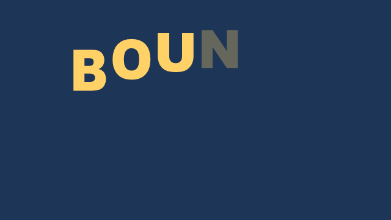
0.25 s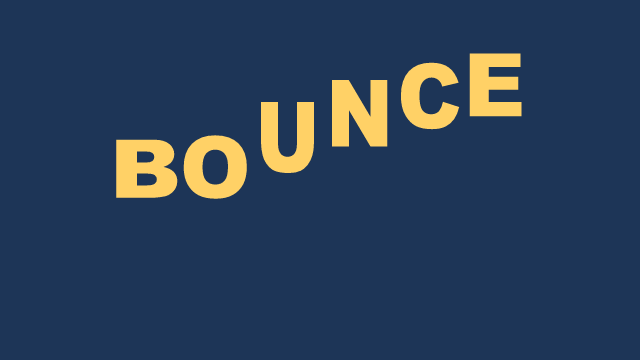
0.5 s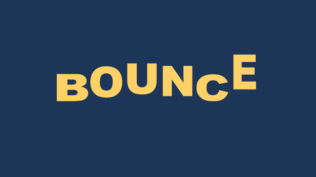
0.75 s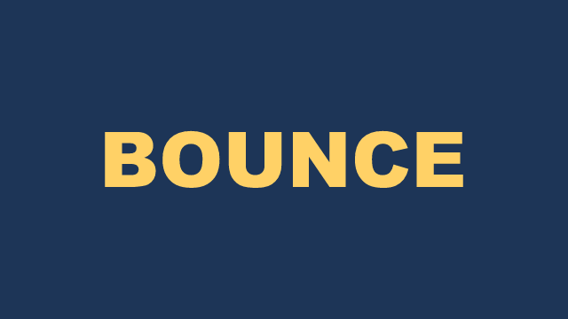
1.6 sDrop Bounce on each letter with a 0.08 s stagger: the letters fall, squash on landing and settle.
Text inside an imported SVG is not drawn (it must be outlined first). For titles, captions and animated words, make the text in Motionator instead: it is laid out with any font installed on your computer, with proper kerning, and every letter becomes its own layer.
Adding text#
- Choose Layer ▸ New Text or press Ctrl+T. A text layer reading Motionator appears in the middle, in a colour that shows on your background, and is selected.
- In the Text group of the Properties panel, type your text. Press Ctrl+Enter or click elsewhere to apply it; press Enter for a new line.
- Pick the font, size, weight, italic, colour, alignment, letter spacing and line height. Every change rebuilds the letters at once.
- Choose Layer per: Letter (default), Word or Line. This decides what each child layer is.
In the Layers panel the text is a root layer with one child per letter, named after it: L1 H, L2 e… Words are named W1 hello and lines Line1 ….
Animating letter by letter#
- Select the text layer (the root, not a letter).
- In the Presets panel, tick Stagger to child layers, set the step (0.05–0.1 s reads well) and the order.
- Double-click a preset. It is applied to every letter, each starting a step after the one before.
| Preset | Effect on text | Tip |
|---|---|---|
| Typewriter | Each letter appears at once: typed out | Step 0.1 s; a monospace font such as Consolas |
| Backspace | Each letter vanishes at once | Order Reverse, so the last letter goes first |
| Drop Bounce | Falls, bounces twice with squash and stretch | Playful titles; set the drop height |
| Neon Flicker | Stutters on like a neon tube, then stays lit with glow | Dark background; Layer per Line for signs |
| Scale Pop, Elastic Pop | Pops in with an overshoot | Step 0.05 s |
| Blur In, Slide In ↑ | Calm, corporate reveals | Layer per Word |
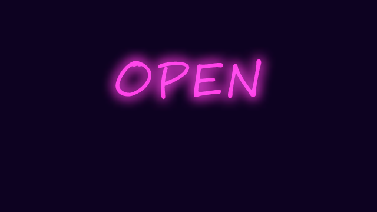
0.1 s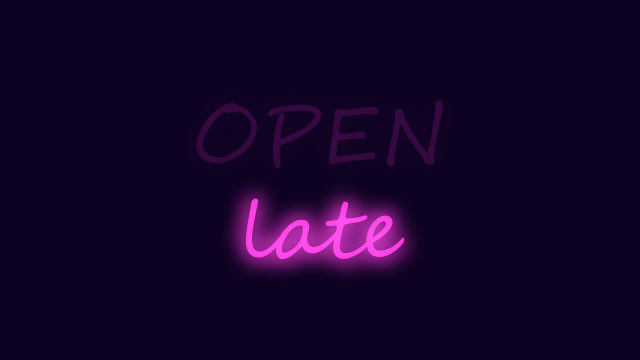
0.6 s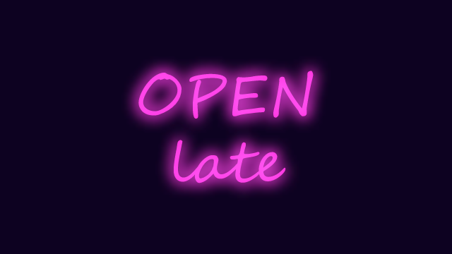
1.2 s 2.5 s
2.5 sNeon Flicker on two lines (Segoe Script, Layer per Line, 0.5 s stagger).
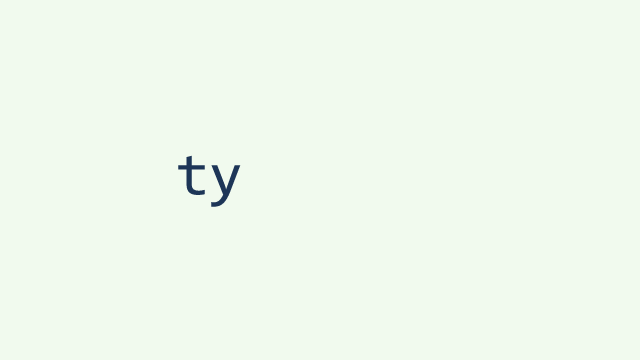
0.15 s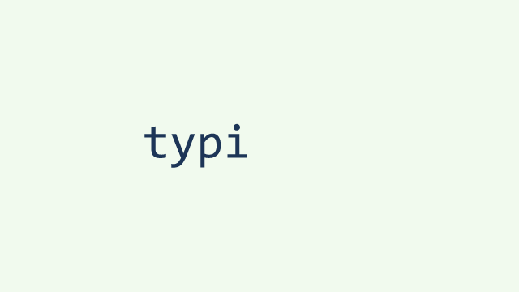
0.4 s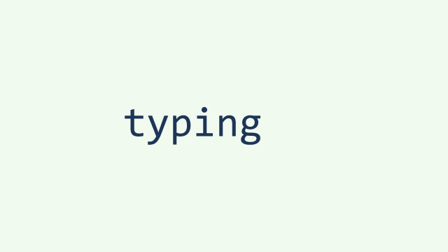
0.65 s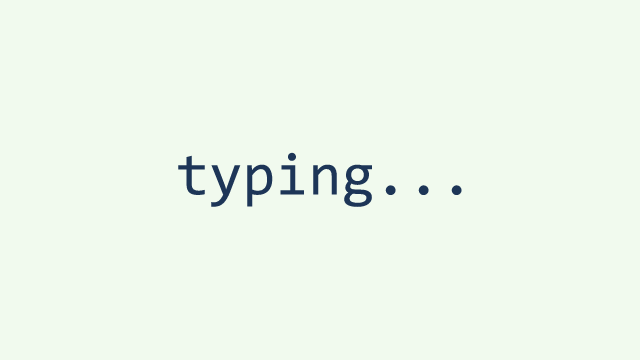
1.2 sTypewriter with a 0.12 s step.
Looping waves across letters#
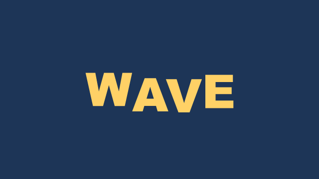
0 s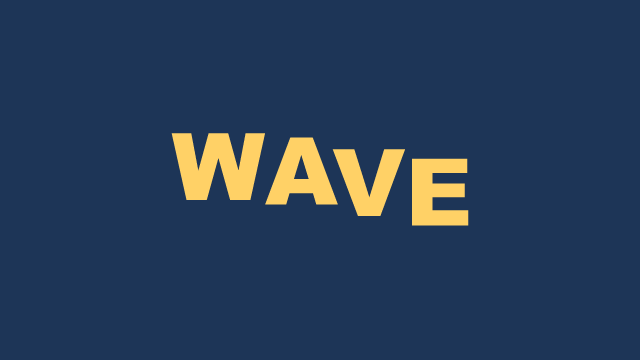
0.25 s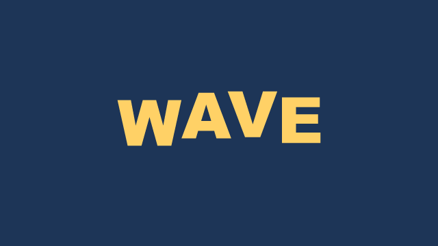
0.5 s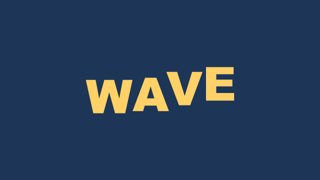
0.75 sFloat (period 1 s) on each letter with a 0.15 s stagger: a wave that still loops seamlessly.
With a Loop preset (Float, Swing, Pulse, Glow Pulse…), stagger shifts each letter's phase rather than its start: every letter moves from the first frame, each a step behind the one before, and the clip still ends exactly as it began. This is how to make waving or rippling titles for stock loops.
Editing text later#
Change the text or its settings any time. Letters that keep their place keep their presets and keyframes, so changing Hey to Hello keeps the animation on H and e and adds new layers for the rest. The text layer itself stays where you put it.
The letters are stored as outlines, so a project opens and renders the same on a computer without the font. If the font has no shape for a character, the status bar names it; pick another font.
22Generator layers: confetti, counters, landscapes and more
Twenty-three kinds of content made from settings instead of artwork, ready to loop.
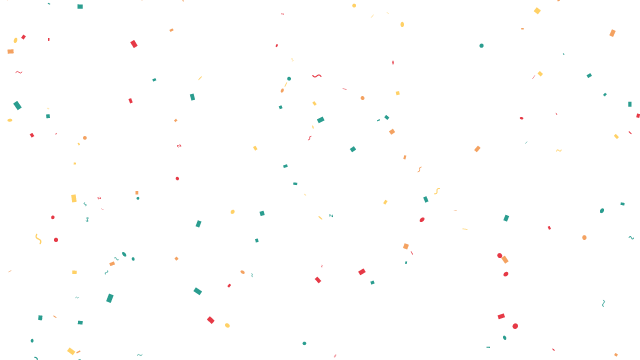
Confetti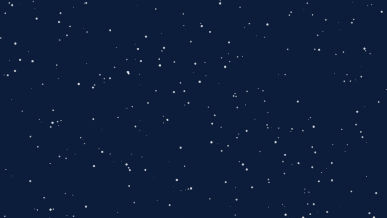
Snow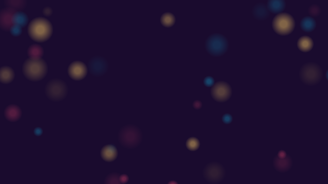
Bokeh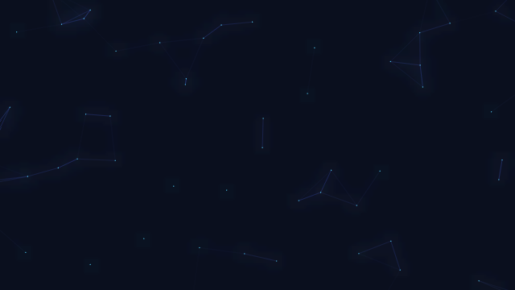
Plexus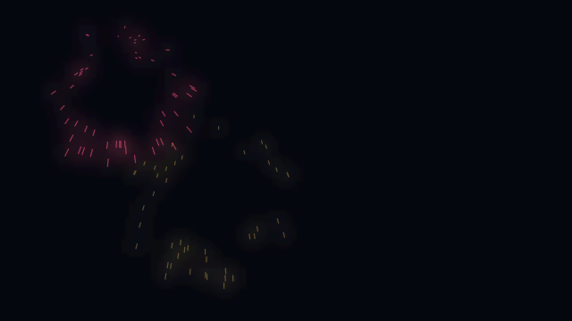
Fireworks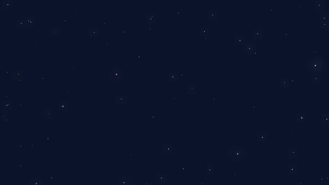
Twinkle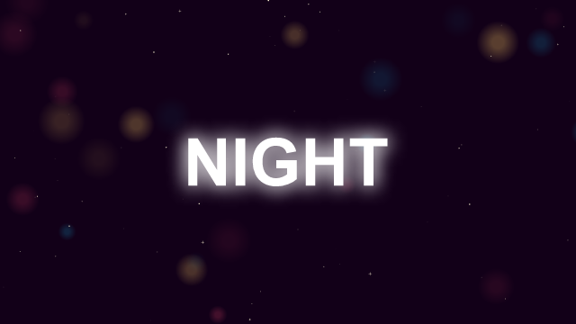
Stacked + text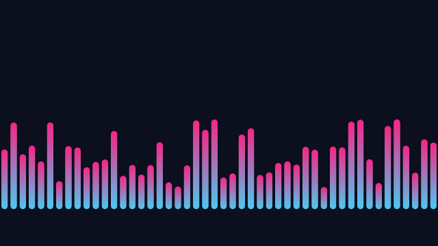
Equalizer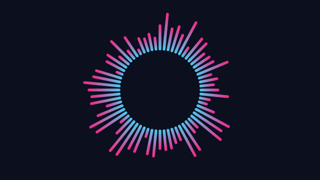
Equalizer · circle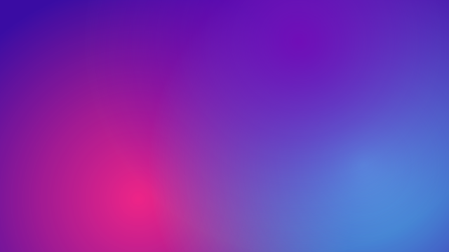
Gradient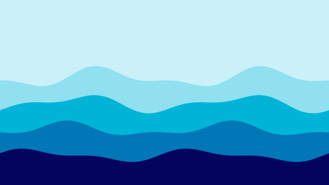
Waves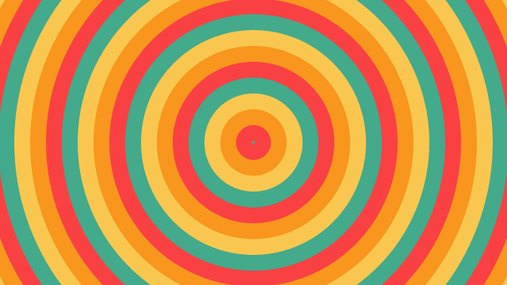
Rings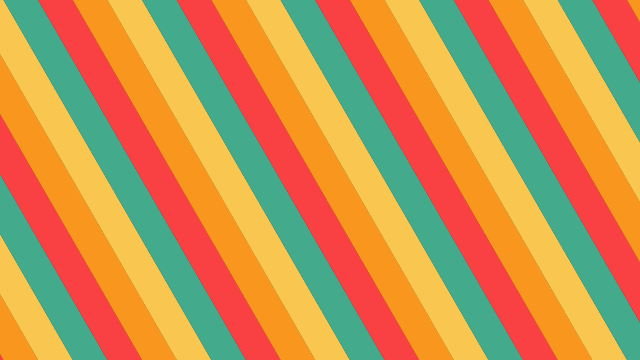
Rings · stripes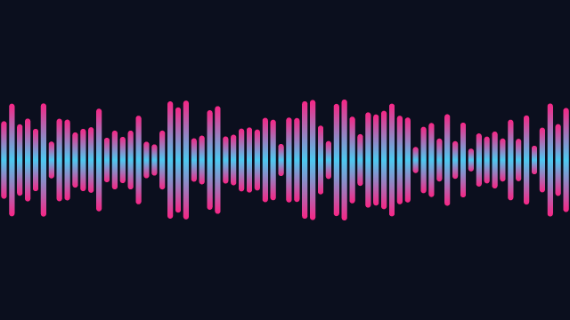
Equalizer · mirror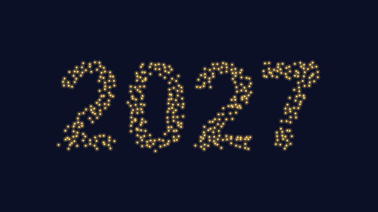
Drone Show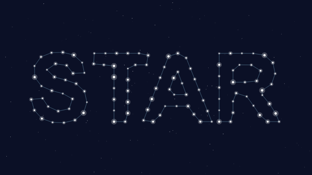
Constellation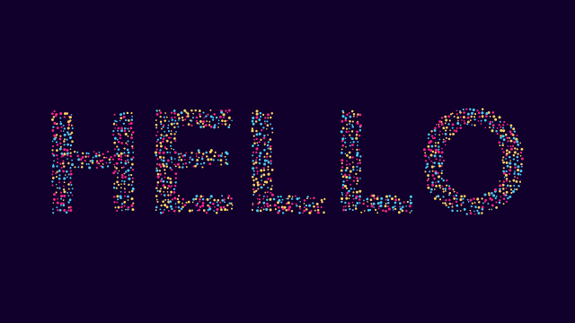
Particle Text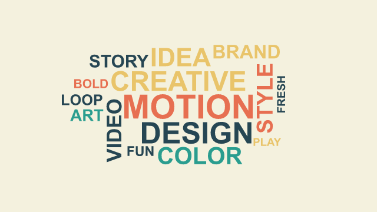
Word Cloud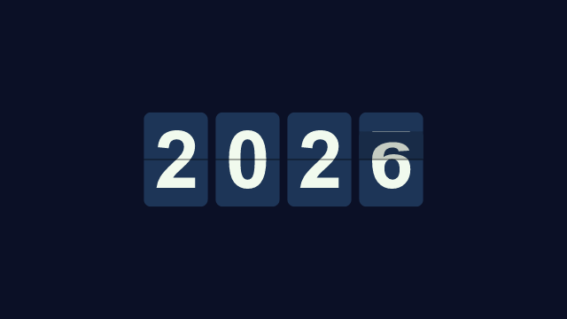
Counter · flip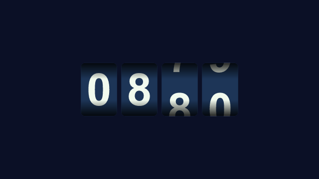
Counter · odometer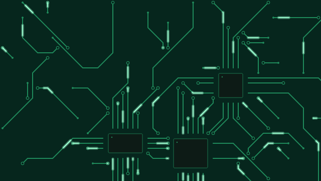
Circuit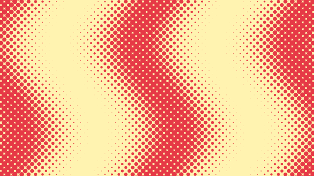
Halftone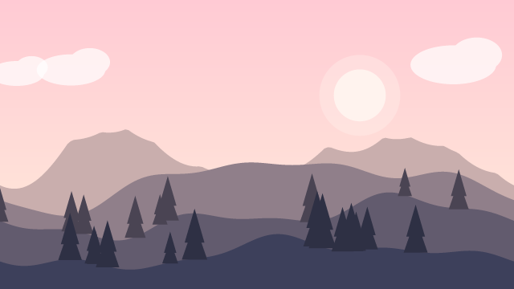
Landscape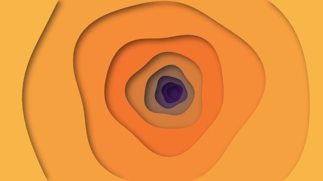
Paper Cut · tunnel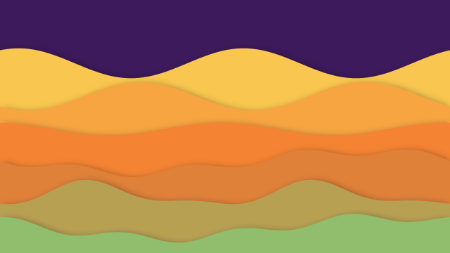
Paper Cut · hills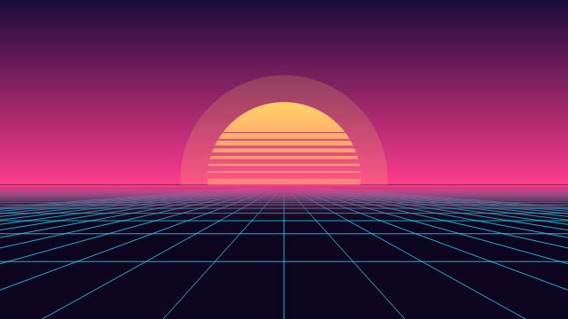
Grid Floor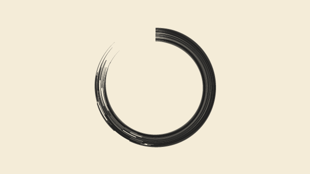
Ensō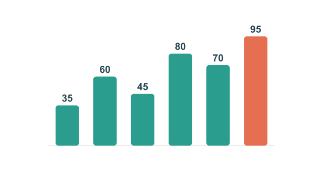
Chart · bars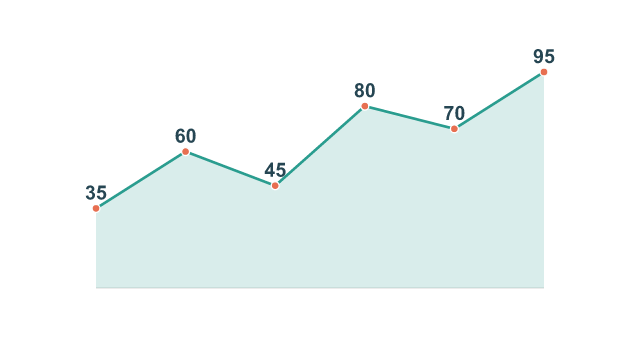
Chart · line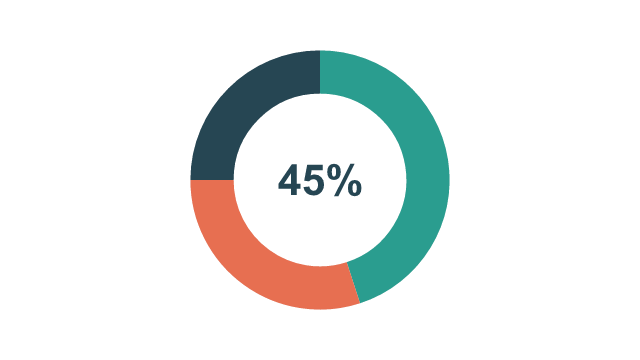
Chart · donutA generator draws hundreds of moving pieces from a few settings. Every piece moves on a path worked out for each moment, never simulated step by step, and every motion repeats a whole number of times over the composition. So a generator loops seamlessly (the ones that build up can too, see below), any frame renders on its own, and the same settings always give the same result.
Adding a generator#
- Open the Generator category at the top of the Presets panel.
- Double-click a generator. It is added as a new layer on top, covering the composition, and selected.
- Adjust it in the Generator group of the Properties panel. Variation is the seed: another number gives another arrangement with the same look. Shuffle picks one at random.
| Generator | What it draws | Main settings |
|---|---|---|
| Confetti | Paper pieces falling, tumbling and swaying | Count, size, fall speed, sway, shapes, 4 colours |
| Snow | Soft flakes in depth: near ones bigger and faster | Count, size, speed, drift, colour, opacity |
| Bokeh | Soft circles of light drifting and pulsing | Count, size, drift, softness, opacity, 3 colours |
| Bubbles | Rising bubbles with a rim and a highlight | Count, size, rise speed, wobble, colour |
| Plexus | Moving dots linked by lines when close (tech, data) | Count, link distance, drift, dot and line size and colour |
| Fireworks | Bursts with trails, gravity and twinkle | Bursts per loop, sparks, size, gravity, 4 colours |
| Twinkle | Stars and sparkles twinkling in place | Count, size, twinkle rate, colour |
| Equalizer | Audio bars to a beat: from the bottom, mirrored or in a circle | Bars, style, height, beat (bpm), gap, base and tip colour |
| Gradient | A soft gradient flowing slowly (mesh-gradient look) | Speed, spread, 4 colours (the first is the base) |
| Waves | Layered waves rolling by | Layers, wave height, waves across, speed, 4 colours (back to front) |
| Rings | Colour bands in rings or diagonal stripes, always moving outward | Shape, band width, speed, 4 colours |
| Drone Show | Hundreds of lights flying into a text, then a heart, star or circle, then scattering | Text, font, second shape, count, size, 3 colours |
| Constellation | Stars appearing along the letters' outlines, joined by lines | Text, font, star spacing and size, line width, background stars, 2 colours |
| Particle Text | Particles flying in to form a text, then scattering | Text, font, count, size, spread, 3 colours |
| Word Cloud | Words popping in and packing together, the first one biggest | Words (one per line), font, biggest size, some vertical, 4 colours |
| Counter | A number counting up or down: flip clock, odometer, slot machine or plain | Style, from, to, minimum digits, start, end, clip ending, size, font, digit and card colour |
| Circuit | A circuit board with chips, 45° traces and pulses of light | Extra traces, chips, grid step, share of pulses, pulse speed, 4 colours (board, traces, pulses, chips) |
| Halftone | Pop-art dots growing and shrinking in waves | Pattern (waves, ripples, diagonal), dot spacing, grid angle, waves, speed, 2 colours |
| Landscape | Hills, mountains and pines scrolling sideways with parallax | Hill layers, speed, trees, sun, 4 colours (sky top, horizon, far, near) |
| Paper Cut | Cut paper with soft shadows: an endless tunnel or layered hills | Style, hole shape, layers, speed, shadow, 4 colours (the first is the deepest) |
| Grid Floor | A synthwave grid rushing towards you under a striped sun | Speed, line width, horizon height, sun, 4 colours (sky, horizon, grid, sun) |
| Ensō | A Zen circle of dry brush painted in one stroke | Size, brush width, start, end, clip ending, ink colour |
| Chart | Bars, a line or a donut growing in, with counting numbers | Type, values (comma separated), numbers, font, start, end, clip ending, 4 colours |
Text, counters and charts#
Drone Show, Constellation, Particle Text, Word Cloud, Counter and Chart draw letters or digits with an installed font, picked in their Font setting. Type the text in the Text box and press Enter; Word Cloud takes one word per line, applied with Ctrl+Enter.
Counter, Ensō and Chart build up: they run between Start and End (percent of the composition) and then hold. For a seamless stock loop, set Clip ending to Go back to the start: the last part of the clip returns them to how they began. The Counter's flip clock turns each card when its digit changes, the odometer rolls a higher drum while the ones below it pass 9 to 0, and the slot machine spins each reel and lands it on the final digit, left to right.
Working with generators#
- A generator is a normal layer. Move and scale it, fade it in with a preset, add glow, put artwork or text above it, or stack several (bokeh behind, confetti in front).
- Sizes in pixels mean pixels at 1080p and scale with the composition, so the same settings look the same in 4K.
- Loops follow the composition. Change the duration and the motion still ends where it began.
- Video only. Lottie and animated SVG exports leave generator layers empty and say so in their report.
Fireworks, Plexus, Twinkle, Drone Show, Constellation and Circuit look their best with a little Glow on a dark background.
232.5D presets, brush reveals and render effects
Coins, cards and paper that turn and peel, long shadows, waving flags and sparklers, on any artwork.
These presets do more than move a layer: the renderer gives it thickness, a back side, a shine or a paper fold. They work on any shape, not only circles and rectangles, and render in video only.
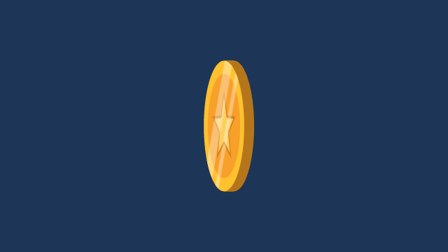
0.4 sCoin Spin: thickness in the edge colour and a shine that sweeps the face; a whole number of turns, so it loops.
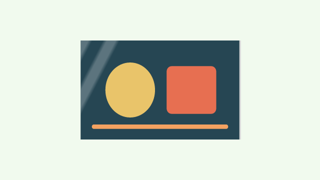
0.3 s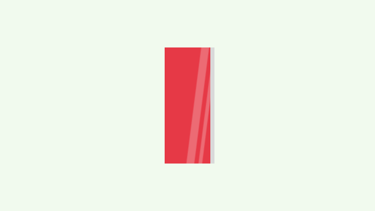
0.5 sCard Flip: turns over, showing a coloured back.
Peel Off on green screen: the paper's back shows, the shadow falls only on the paper, and the screen ends fully green.
| Preset | Category | Settings |
|---|---|---|
| Coin Spin | Loop | Period, direction, axis (vertical coin or horizontal board), thickness, edge colour, back side (same, mirrored, plain colour), shine |
| Card Flip In | Enter | Turns from its back to its front; same settings as Coin Spin |
| Card Flip | Emphasis | One full turn, showing the back on the way |
| Peel On / Peel Off | Enter / Exit | Starts at a corner or an edge, paper back colour, shadow; the flap leaves the screen |
| Peel Corner | Emphasis | A corner lifts by an amount and settles back |
| Brush In / Brush Out | Enter / Exit | Painted in (or wiped away) by a brush going back and forth |
| Long Shadow / Long Shadow Grow | Loop / Enter | A flat shadow swept away from the light: direction, length, colour, opacity, fade at the end |
| Flag Wave | Loop | Waves like cloth with light and shade in the folds: wave height, waves across, period, left edge held, light and shade |
| Sparkler Draw | Enter | Strokes draw on while sparks fly from the tip: sparks per second, size, launch speed, colour, ease |
Long Shadow Grow on a badge: the shadow keeps the badge's outline, at 45°.
Flag Wave: held at the pole, with light and shade in the folds; a seamless loop.
Sparkler Draw on a stroked path: sparks fly and fall from the drawing tip and burn out after it.
Brush In: four back-and-forth strokes paint the layer in. The same reveal is in Properties ▸ Reveal from ▸ Brush strokes.
For a page-curl transition, put all the artwork in one group covering the frame and apply Peel Off to it over a #00B140 background, then run Stock check in the Render Queue.
A layer that spins does not also peel (the spin wins), and a layer that spins or peels does not wave or cast a long shadow. Bake to keyframes keeps these presets as presets, since they have no keyframe form, and Lottie and animated SVG leave them out.
Put a long shadow on the outermost group of an icon, not on its parts as well: shadows of shadows take much longer to render.
24Glow
Light around a layer, in its own colours.
Glow in the Effects group of the Properties panel adds the layer's own light around it. It has a stopwatch like Blur, so it can be keyframed; Glow radius sets how far the light spreads, in composition pixels. The presets Glow Pulse (a seamless loop) and Glow Flash (once) animate it for you, and Neon Flicker uses it for text.
- Thin lines still light up, and strong light turns softly towards white, like a real glow.
- It sits in the layer's place. Layers above it cover its light, as they cover the layer.
- Glow only brightens, so it shows on dark backgrounds and not on white.
- Video only. Lottie and animated SVG exports leave it out and say so.
Glow is rendered at a quarter of the output size and blurred there, so even 4K stays quick. Glow on a whole SVG, a generator or a text layer is the fastest; glow on a part inside an SVG takes a little longer.
25Animation principles for motion design
The classic rules of animation, and the Motionator feature for each.
Timing#
How long a motion lasts sets its mood: short is energetic, long is calm. Typical durations:
| Content | Typical duration |
|---|---|
| Button and icon feedback (web/app) | 0.15 – 0.3 s |
| UI elements entering, cards, menus | 0.3 – 0.6 s |
| Titles and text lines | 0.5 – 1 s |
| Logo reveal (whole) | 2 – 5 s |
| Social media post | 5 – 15 s |
| Stock background loop | 10 – 30 s |
Spacing and easing#
The dots show where an object is on equally spaced frames. Linear motion has equal steps and looks robotic. Eased motion bunches frames at the ends, so the object speeds up and slows down like a real object with weight. Press F9 on keyframes, or pick an easing for a preset.
Anticipation#
A small move in the opposite direction before the main action prepares the eye: a character crouches before jumping, a button shrinks slightly before popping. In Motionator, keyframe a small opposite value just before the motion, or use curves with a negative handle such as Ease In Back.
Follow-through and overshoot#
Real objects do not stop dead; they go a little too far and settle. Scale Pop, Pop Up and Elastic Pop do this built in, and any preset can use Ease Out Back. In keyframes, add a key slightly past the final value a few frames before the end.
Overlapping action and stagger#
When parts start at slightly different times and overlap, motion feels fluid and organic. Waiting for each part to finish feels slow and mechanical. Use Stagger with a step shorter than the preset's duration (e.g. 0.08 s for 0.6 s Pop Up) for overlap.
Arcs#
Living things move along curves, not straight lines. Curve your motion paths with the handles on the canvas; the plane in the icon sample swoops instead of sliding.
Secondary action#
A small extra motion supports the main one: the badge hovers while the plane flies, a glow pulses while the logo sits. Add a Loop preset with a small amount on top of the main animation.
Squash and stretch#
Squashing on impact and stretching in fast motion gives flexibility and weight. Squash, Stretch In, Rubber Band and the Bounce loop do this; keep the anchor at the contact point.
Hierarchy and restraint#
- Animate the most important thing first and most clearly; let secondary items follow.
- Use one or two kinds of motion per scene. Ten different presets at once looks busy.
- Leave moments of stillness so the viewer can read.
- Match motion to the brand: soft eases for calm brands, snappy Expo and Back for energetic ones.
26Video export: Render Queue
Render one composition to several formats and sizes in one go.

- Click Export or press Ctrl+M: the composition is added to the queue. Add it again for more outputs.
- Choose the format and size of each item, and tick Blur for motion blur.
- Click Choose output… to set the file name.
- Press Render. Items render one after another with progress and time left; each can be cancelled.
Formats#
| Format | Transparency | Use it for |
|---|---|---|
| H.264 (MP4) | ✗ | Stock footage, social media, presentations: plays everywhere. |
| ProRes 422 HQ (MOV) | ✗ | Masters for editing and for stock sites that accept ProRes; large files. |
| ProRes 4444 (MOV) | ✓ | Overlays with transparency for video editors (Premiere, Resolve, Final Cut). |
| VP9 (WebM) | ✓ | Transparent video for websites. |
Size scales the composition to 720p, 1080p, 1440p or 2160p (4K UHD) keeping its aspect ratio, or keeps the composition size. Because Motionator draws vectors, a 4K render is as sharp as the composition at any size. H.264 and VP9 need even widths and heights; an odd size is shown in red.
Motion blur blends 8 sub-frames per frame (180° shutter) for natural blur on fast motion. It takes about 8× longer to render.
Stock presets and checks#
Stock preset… adds an item already set up for microstock sites:
| Preset | Output |
|---|---|
| Microstock 4K · H.264 | 3840×2160, high-quality H.264 (CRF 12) |
| Microstock 4K · ProRes 422 HQ | 3840×2160 master |
| Microstock HD · H.264 | 1920×1080, H.264 (CRF 14) |
A yellow warning appears on an item when something is commonly rejected by stock sites: a clip shorter than 5 s or longer than 60 s, a height below 1080 px, a non-standard frame rate, or a format with alpha. Always check the current rules of the site you upload to.
Checking a seamless loop#
Looping backgrounds sell better when they repeat without a visible jump. Check loop compares every layer at the end of the composition with the start. If something differs, it lists the layers and properties. Match the end to the start adds keyframes at the end with the start values. Loop presets are always seamless; Enter, Exit and Emphasis presets cannot be fixed automatically, so use Loop presets or remove them.
27Lottie export
Small JSON animations for websites and apps.

- Choose File ▸ Export Lottie… Ctrl+Alt+L.
- Decide whether to include the composition background (Lottie is usually transparent) and the number precision (fewer decimals = smaller file).
- Read the compatibility report, then click Export… and save the
.jsonfile.
Keyframes are exported as Lottie keyframes with their easing; presets are exported as sampled keyframes (simplified), which looks the same. Shapes, gradients, strokes, Trim Paths, clip paths and Tint are kept.
Using it on a web page#
<div id="logo" style="width:480px;height:270px"></div>
<script src="https://cdnjs.cloudflare.com/ajax/libs/lottie-web/5.12.2/lottie.min.js"></script>
<script>
lottie.loadAnimation({
container: document.getElementById("logo"),
renderer: "svg",
loop: true,
autoplay: true,
path: "logo.json"
});
</script>Or use the <lottie-player> / <dotlottie-player> web components, Lottie for Android/iOS, or upload the file to LottieFiles. Test the JSON in the player you will use: support for some features differs between players.
28Animated SVG export
One self-contained .svg that moves with CSS, with no library needed.

Choose File ▸ Export Animated SVG… Ctrl+Alt+G. Tick Loop to repeat forever or leave it off to stop on the last frame. The file contains your artwork and CSS keyframe animations; it plays in every modern browser.
Putting it on a page#
<!-- as an image: simplest, the animation plays on its own -->
<img src="icon.svg" width="256" height="256" alt="Paper plane">
<!-- inline in the HTML: lets your page's CSS reach inside -->
<div class="hero-icon">
<!-- paste the contents of icon.svg here -->
</div>- <img> and CSS
background-imagework and keep the animation; scripts on the page cannot control it. - Inline SVG can be paused with
animation-play-state: pausedon its elements.
| Choose | When |
|---|---|
| Animated SVG | Icons, logos and illustrations on websites, with no JavaScript. Usually the smallest file. |
| Lottie | Apps (Android, iOS, Flutter, React Native), or when you need to control playback from code. |
| Video (VP9/MP4) | Complex scenes with heavy blur, many layers or filters. |
29Using animations on websites and in apps
Practical code for lottie-web, React and animated SVG.
Controlling a Lottie with JavaScript#
loadAnimation returns an object with methods to control playback:
const anim = lottie.loadAnimation({
container: document.getElementById("icon"),
renderer: "svg", loop: false, autoplay: false,
path: "icon.json"
});
anim.play(); // play from the current frame
anim.pause();
anim.stop(); // back to frame 0
anim.setSpeed(1.5); // 1 = normal
anim.setDirection(-1); // play backwards
anim.goToAndStop(45, true); // jump to frame 45
anim.playSegments([0, 30], true);
anim.addEventListener("complete", () => console.log("done"));Play on hover
const box = document.getElementById("icon");
box.addEventListener("mouseenter", () => { anim.setDirection(1); anim.play(); });
box.addEventListener("mouseleave", () => { anim.setDirection(-1); anim.play(); });Play when scrolled into view
new IntersectionObserver(([e]) => e.isIntersecting ? anim.play() : anim.pause(),
{ threshold: 0.4 }).observe(document.getElementById("icon"));Lottie in React#
// npm install lottie-react
import Lottie from "lottie-react";
import spinner from "./spinner.json";
export function Loader() {
return <Lottie animationData={spinner} loop style={{ width: 96, height: 96 }} />;
}Other platforms: lottie-android and lottie-ios (Airbnb), lottie for Flutter, lottie-react-native. They all read the same JSON.
Keeping Lottie files small#
- Lower Number precision in the export dialog (2 decimals is usually invisible).
- Prefer keyframes over presets where file size matters: keyframes export as a few bezier keys, presets as sampled keys.
- Simplify paths in your design tool; every point is stored.
- Leave out the background if the page already has one.
- Serve the JSON with gzip/brotli compression (most hosts do this automatically); JSON compresses very well.
Accessible animated SVG#
<!-- decorative: hide it from screen readers -->
<img src="wave.svg" alt="" aria-hidden="true">
<!-- meaningful: describe it -->
<img src="logo.svg" alt="Motionator logo">
<!-- respect users who prefer less motion (inline SVG) -->
<style>
@media (prefers-reduced-motion: reduce) {
.hero-icon svg * { animation: none !important; }
}
</style>With <img> the animation cannot be paused by page CSS. If you need reduced-motion support, either inline the SVG and use the CSS above, or swap the source with <picture> and media="(prefers-reduced-motion: reduce)" pointing to a static SVG.
Transparent video on the web#
<video autoplay loop muted playsinline width="640">
<source src="badge.webm" type="video/webm"> <!-- VP9 + alpha -->
<source src="badge.mp4" type="video/mp4"> <!-- fallback, no alpha -->
</video>VP9 with alpha plays with transparency in Chrome, Edge and Firefox. Safari needs HEVC with alpha, which Motionator does not export; the MP4 fallback shows there on the composition background. For simple vector graphics, Lottie or animated SVG are lighter and sharper.
Which format is lightest?#
For the logo sample (3 s, 9 animated layers) the export dialogs report about 27.7 KB for Lottie (3 decimals) and 26.4 KB for the animated SVG, before gzip compression. A video of the same clip is many times larger and is fixed to one resolution. The dialogs always show the size before you save, so compare for your own project.
Vector formats stay sharp at any size and on high-DPI screens; choose video only when the scene needs effects the vector formats cannot show.
30Making motion backgrounds for microstock
A practical workflow from idea to upload.
Stock agencies change their requirements from time to time. The values below are common across major sites; always check the current contributor guidelines of the site you upload to.
Technical checklist#
| Item | Common requirement | In Motionator |
|---|---|---|
| Resolution | At least 1920×1080; 3840×2160 (4K) sells better | Size 2160p in the Render Queue |
| Length | 5 – 60 s | Composition duration; warning if outside |
| Frame rate | Standard rates (23.976–60) | Composition settings |
| Codec | H.264 high quality or ProRes | Stock presets |
| Audio | Usually none for backgrounds | Mute the track or leave it out |
| Seamless loop | A strong selling point (mention it) | Check loop |
| Content | No logos, brands or text you do not own | Use your own artwork |
What sells: ideas that suit Motionator#
Abstract waves
Layered waves with Sway and Float, gradients, slow motion. Classic presentation backgrounds.
Particles and bokeh
Many small circles with Drift and Glow at different periods; blur some for depth.
Geometric patterns
Grids of shapes with Spin, Pulse and stagger; perfect loops by design.
Tech and circuits
Line art with Trace running along paths, Glow on nodes.
Seasonal
Snow, confetti, lanterns, Ramadan and Christmas themes, released a few months early.
Lower thirds and overlays
Transparent ProRes 4444 elements editors can drop onto their video.
Designing perfect loops#
- Pick the clip length first (for example 10 s).
- Give every Loop preset a period that divides it: 10, 5, 2.5, 2 or 1 s. Different periods (5 and 2.5) create variety and still meet at the end.
- For Spin, a full turn must fit, or the shape must be symmetric: a 16-point star repeats every 22.5°.
- Do not use Enter/Exit presets in a loop: the start and end would differ.
- For keyframes, make the last key equal to the first (the Check loop fix does this for you).
- Run Check loop, then watch the clip with loop playback on: the jump from last to first frame should be invisible.
One project, many clips#
Stock buyers search by colour and mood. After finishing one background, save copies of the project with different colours (use Tint on the root layer, or recolour the SVG), different speeds (change the periods) or a different crop (scale the root layer), and render each. Queue them all in the Render Queue overnight.
Titles and keywords#
- Title: what it is, the style and the use. “Abstract purple waves seamless loop background 4K”.
- Keywords: subject (waves, particles), colours, mood (calm, corporate, festive), technique (loop, motion graphics, animation), use (presentation, intro, backdrop).
- Most sites need English metadata; write it in English even if your audience is local.
- Abstract graphics made entirely by you need no model or property release.
31Microstock tools: checks, metadata and batches
Catch rejections before uploading and write each site's CSV.
Stock templates#
In the composition's Properties (click empty canvas), Stock template sets size, frame rate, duration and background for a kind of clip:
| Template | Setup | Rule |
|---|---|---|
| Green-screen transition | 3840×2160, 30 fps, 5 s, #00B140 | Green at both ends, fully covered around 2.3–2.7 s (the cut point) |
| Luma matte | 3840×2160, 30 fps, 5 s, black | First frame pure black, last pure white |
| Stock loop | 3840×2160, 30 fps, 10 s | Ends exactly as it starts (Check loop) |
Stock check#
Stock check in the Render Queue renders a few frames and tests what reviewers reject. It knows the clip kind from the background (chroma green means a transition) and lists each problem in one line:
- Every clip: standard frame rate and 5–60 s (errors), 3840×2160 (a warning below 4K).
- Green-screen transition: first frame 100 % chroma, last frame at least 99.9 %, no chroma at all at the cut point, no green or teal artwork (it would be keyed out), and no half-transparent edges over the green such as glow, blur or shadows (they leave a green fringe).
- Luma matte: first frame pure black, last frame pure white.
Stock metadata and CSVs#
Fill in Stock metadata in the composition's Properties once per project: title, description (at least 5 words), keywords (most important first), one or two Shutterstock categories and the Adobe Stock category. After rendering, Metadata CSV in the Render Queue writes four files into a metadata folder next to the finished videos, one row per video:
| File | Adapted to the site |
|---|---|
| shutterstock_metadata.csv | Video category names (art, health care), at most 50 keywords |
| adobestock_metadata.csv | Title up to 200 characters, at most 49 keywords, category number |
| vecteezy_metadata.csv | No underscores in file names, letters and digits only, words such as vector, video, AI removed, licence Pro |
| pond5_metadata.csv | Title up to 80 characters, clean description, price 39 (4K) and 25 (HD) |
Loops get the keywords seamless loop and looping animation automatically. Anything a site would refuse is shown in the status bar.
Batch variations#
One project, three variations: another seed, swapped colours, a new background and new text.
- Build one clip as a template. Generators, text layers and colours are what variations can change.
- In the Render Queue, click Batch variations…. Each row is one video: file name, seed, replacements for the project's six main colours, background, new text for the first text layer and its own stock title.
- Add rows, choose the output folder and click Add to the queue. Every row becomes a 4K H.264 item that renders its own variation.
- Press Render, then Metadata CSV: each row keeps its own title.
Variations change the look, not the motion. Stock sites reject batches of near-identical clips ("similar content"), so mix variations with clips that move differently or have their own style.
32Projects, auto-save and recovery
- Save Ctrl+S / Save As… Ctrl+Shift+S write a
.motionatorfile. It contains the SVGs, keyframes, presets and your own presets used, so it is complete on its own (only audio stays a separate file). - New Project Ctrl+Alt+N and Open Project… Ctrl+O ask first if there are unsaved changes. The title bar shows * when there are.
- Auto-save keeps a recovery copy every minute (change it in Preferences). It never overwrites your file.
- After a crash or power cut, Motionator offers Recover project on the next start. Choose Recover to continue, or Discard.
33Tutorial: logo reveal with sound
Uses samples/logo.svg. Result: samples/logo.motionator.
- New project. Press Ctrl+K: 1920×1080, 30 fps, 4 s, white background.
- Import
logo.svgCtrl+I. The layers areMark(Ring, Wave, Dot),Wordmark(the letters) andUnderline. - Make it bigger. Select the root layer
logo.svgand set Scale to 210 %: vectors stay sharp. - Draw the mark. At 0 s select
Ringand apply Draw On, then do the same forWave. In the Properties panel set each Duration to 1.5 s. - Write the letters one by one. Tick Stagger to child layers with 0.125 s, In order. Move the playhead to 0.5 s, select
Wordmarkand apply Draw On: each letter draws a little after the previous one. Untick stagger afterwards. - Pop the dot. At 1.4 s select
Dotand apply Scale Pop. - Wipe the underline. At 1.8 s select
Underlineand apply Wipe In (From the left). - Accent. At 3.0 s select
Markand apply Pop; lower Amount to 8 % for a subtle beat. - Sound. Import a short whoosh or chime with Ctrl+Alt+I and line it up with the Pop using the waveform.
- Export. MP4 for social media; for the website, Export Animated SVG without Loop so it stops on the finished logo.
Rotate or scale a logo part around its centre? Check where its anchor point is first: press Y and drag it, or use Layer ▸ Center Anchor Point.
34Tutorial: seamless 4K stock background
Uses samples/background.svg and ambient.wav. Result: samples/background.motionator.
 0 s
0 s 2.5 s
2.5 s 5 s
5 s 7.5 s
7.5 s
- Composition. Ctrl+K: 3840×2160 (or 1920×1080, Motionator scales up sharply), 30 fps, 10 s.
- Import
background.svg: Backdrop, Sun_Glow, Sun, Bubbles (Bubble_1–5), Wave_Back, Wave_Front, Ribbon. - Use only Loop presets so the end matches the start. The sample uses the settings in the table below.
- Make periods divide the duration. In a 10 s clip, use periods of 10, 5, 2.5 or 2 s so every cycle completes exactly at the end. The bubbles use 5, 3.33 and 2.5 s so they never move in step (10 ÷ 3.33 = 3 cycles).
- Audio (optional). Import
ambient.wav; set Fade in and Fade out to 1 s. Many stock sites prefer clips without sound, so you can also mute it for the upload. - Check the loop. Ctrl+M, then Check loop in the Render Queue. It should say Seamless.
- Render. Choose Microstock 4K · H.264 and, if the site accepts it, Microstock 4K · ProRes 422 HQ. Fix any yellow warning, then Render.
| Layer | Preset | Settings |
|---|---|---|
| Sun | Pulse | Amount 6 %, Period 5 s |
| Sun_Glow | Glow | Min 45 %, Period 2.5 s |
| Bubble_1 … Bubble_5 | Drift | Amplitude 40 px; Periods 5, 3.33, 2.5, 5, 3.33 s |
| Wave_Back | Sway | Angle 3°, Period 5 s |
| Wave_Front | Float | Amplitude 14 px, Period 2.5 s |
| Ribbon | Trace | Length 35 %, Period 5 s |
Upload checklist: 5–60 s long, at least 1920×1080, standard frame rate, no logos or trademarks you do not own, a descriptive title and keywords. Mention “seamless loop” in the description.
35Tutorial: animated icon for a website
Uses samples/icon.svg. Result: samples/icon.motionator.
- Composition 1080×1080, 30 fps, 3 s, Transparent ticked. (Vectors scale, so a large composition costs nothing for Lottie or SVG.)
- Import
icon.svg: Badge, Plane (Plane_Body, Plane_Fold) and Trail. Set the root layer's Scale to 190 %. - Badge. At 0 s apply Scale Pop to
Badge, and Hover (Loop) with Amplitude 6 px and Period 1.5 s so it keeps floating. - Fly the plane with keyframes. Select
Plane. At 0 s, drag it about 140 px left and 120 px down, rotate it to −25° and turn on the Position and Rotation stopwatches. At 1 s, drag it past its place (up and right) and rotate to 10°. At 2 s, put it back in place at 0°. - Curve the path. Drag the handles of the motion path on the canvas so the plane swoops.
- Ease it. Select all keyframes and press F9. Check the speed graph Shift+F3: smooth hills, no sharp corners.
- Trail. At 1 s apply Draw On to
Trailand set its Duration to 1 s. - Export both Lottie Ctrl+Alt+L for the app and Animated SVG Ctrl+Alt+G for the website, and compare the sizes in the dialogs.
36Tutorial: loading spinner for Lottie
Uses samples/spinner.svg. Result: samples/spinner.motionator.
 0 s
0 s 0.125 s
0.125 s 0.25 s
0.25 s 0.375 s
0.375 sA spinner must loop perfectly and stay tiny. The sample has a grey Track, a group Arcs with two opposite arcs, and a Core dot.
- Composition 512×512, 30 fps, 2 s, Transparent.
- Import
spinner.svg. - Select
Arcsand apply Spin (Loop). Set Period to 1 s: two full turns in the 2 s clip. - Select
Coreand apply Pulse with Amount 10 % and Period 1 s. - Check loop in the Render Queue: it should be seamless.
- Export Lottie with 2 decimals. Use it with
loop: true.
Why two arcs in a group? A layer spins around its anchor point, which starts at the centre of its box. One arc alone has its box off-centre and would wobble; two opposite arcs make the box centred on the circle. With a single arc, move the anchor to the circle's centre with the Anchor Point tool Y.
37Tutorial: lower third with transparency
Uses samples/lowerthird.svg. Result: samples/lowerthird.motionator.
 0.2 s
0.2 s 0.5 s
0.5 s 1.4 s
1.4 s 4.7 s
4.7 sA lower third is the name caption at the bottom of interviews and vlogs. It is delivered with transparency so editors can place it over any footage.
- Composition 1920×1080, 30 fps, 5 s, Transparent. Turn on View ▸ Safe Area to keep the text inside title-safe.
- Import
lowerthird.svg: groupLower_ThirdwithBar,Accent,TitleandSubtitle(text already outlined). - At 0 s: Scale Pop on
Accent. - At 0.15 s: Wipe In on
Bar, from the left. - At 0.45 s: Slide In ← on
Titlewith Distance 80 px. - At 0.7 s: Fade In on
Subtitle. - Select
Lower_Thirdand apply Fade Out: as an Exit preset it is placed at the end automatically. - Render as ProRes 4444 + alpha (for Premiere, Resolve, Final Cut) or VP9 + alpha (for the web).
Exit presets count from the end of the composition: in the Properties panel their first field is Ends before the end (0 s = ends exactly with the composition). If you lengthen the composition, the exit moves with the end, which is usually what you want for captions.
To reuse it for another person, duplicate the SVG in your design tool, change the text, outline it and import the new file into a copy of the project; the presets are on layers with the same names.
38Tutorial: square social media post
Uses samples/social.svg. Result: samples/social.motionator.
 0.25 s
0.25 s 0.6 s
0.6 s 1.3 s
1.3 s 3.2 s
3.2 s- Composition 1080×1080 (Instagram feed), 30 fps, 6 s.
- Import
social.svg:Backdrop,Burst, groupHeadlinewithLetter_S/A/L/E, groupPrice_Tag. Burst: Scale Pop at 0 s, then Spin (Loop) with Period 12 s for a slow turn.- Tick Stagger to child layers (0.1 s, In order), select
Headlineat 0.4 s and apply Pop Up. - Untick stagger. At 1.1 s apply Slide In ↑ to
Price_Tagwith Distance 120 px. - At 3 s apply Heartbeat to
Headlineto re-catch the eye. - Render H.264 at composition size; add music with Import Audio if the platform plays sound.
| Platform | Size | Notes |
|---|---|---|
| Instagram / Facebook feed | 1080×1080, 1080×1350 | Square or 4:5 portrait |
| Reels, Stories, TikTok, Shorts | 1080×1920 | Keep text away from the top and bottom 250 px (UI overlays) |
| YouTube, LinkedIn | 1920×1080 | Landscape 16:9 |
Make a vertical version by changing the composition to 1080×1920 and moving the root layer: presets stay relative to each layer, so the animation adapts.
39AI agents: Ask AI and the MCP server
Let Claude build and change animations, with your own subscription.
Motionator includes motionator-mcp, a server that gives AI agents its tools: create projects, import or write SVG, add text and generators, apply presets and keyframes, look at frames, check loops and stock rules, render, and write metadata. The intelligence comes from the agent you already use, such as Claude Code or opencode, logged in with your own account. Motionator stores no API keys.
Ask AI inside the app#
- Install Claude Code from claude.com/claude-code and run
claudeonce in a terminal to log in. - Open Window ▸ Ask AI.
- Describe what you want, e.g. Add confetti behind and a SALE text that drops and bounces, and press Send (Ctrl+Enter).
- Watch it work: each change appears in the open project at once, and the panel lists the tools it uses. Every change is one step in Edit ▸ Undo.
You can keep editing while it works; it picks up your changes before each step. Cancel stops it. It does not save, render or export unless you ask.
Using Motionator from Claude Code or opencode#
- Open Help ▸ Connect AI (Claude Code, opencode)…. Each agent shows whether it is installed and connected.
- Click Connect next to the agent. Motionator registers its server for you: with Claude Code's own
claude mcp add, and in opencode's global settings (a copy of the original file is kept asopencode.jsonc.motionator-backup). - Click Open terminal to start the agent in a new window, in your Documents folder, and ask away. Disconnect removes the registration again.
To register by hand instead: the installer puts the server next to Motionator, normally in %LOCALAPPDATA%\Motionator.
claude mcp add motionator -- "%LOCALAPPDATA%\Motionator\motionator-mcp.exe"For opencode, add it to opencode.json:
{
"mcp": {
"motionator": { "type": "local", "command": ["C:\\Users\\you\\AppData\\Local\\Motionator\\motionator-mcp.exe"], "enabled": true }
}
}Then ask in plain words, e.g. Make 5 seamless 4K stock loops about Ramadan with Motionator, save them in D:\stock and write the CSVs. The agent reads Motionator's guide and preset list, looks at preview frames to check its work, and queues renders in the background. To work on the project open in the app, ask it to work on my open Motionator project: it connects in live mode, like Ask AI.
| Tools | What the agent can do |
|---|---|
| Project | New (with stock templates), open, save, info, canvas, undo, redo, live connect |
| Content | Import or write SVG, text layers and fonts, generators, layer properties and geometry |
| Animation | Preset catalogue, apply/update/remove presets with stagger, keyframes |
| Checking | Preview frames and contact sheets (it sees the result), loop check, stock check |
| Output | Render queue, batch variations, Lottie, animated SVG, stock metadata and CSVs |
The server never runs commands and only writes Motionator's kinds of file (projects, videos, Lottie, SVG, CSV). Set MOTIONATOR_MCP_ROOTS to a list of folders separated by ; to keep it inside them.
40Keyboard shortcuts
Shortcuts follow After Effects where possible.
File
| Command | Shortcut |
|---|---|
| New Project | Ctrl+Alt+N |
| Open Project… | Ctrl+O |
| Save | Ctrl+S |
| Save As… | Ctrl+Shift+S |
| Import SVG… | Ctrl+I |
| Import Audio… | Ctrl+Alt+I |
| Export Animated SVG… | Ctrl+Alt+G |
| Export Lottie… | Ctrl+Alt+L |
| Exit | Ctrl+Q |
Edit
| Command | Shortcut |
|---|---|
| Undo | Ctrl+Z |
| Redo | Ctrl+Shift+Z Ctrl+Y |
| Delete | Delete |
| Deselect All | Ctrl+Shift+A |
| Preferences… | Ctrl+Alt+; |
Composition and layer
| Command | Shortcut |
|---|---|
| Composition Settings… | Ctrl+K |
| Add to Render Queue | Ctrl+M |
| New Text | Ctrl+T |
| Center Anchor Point | Ctrl+Alt+Home |
Animation
| Command | Shortcut |
|---|---|
| Easy Ease | F9 |
| Easy Ease In | Shift+F9 |
| Easy Ease Out | Ctrl+Shift+F9 |
| Previous Keyframe | J |
| Next Keyframe | K |
| Reveal Animated Properties | U |
| Graph Editor | Shift+F3 |
Time and playback
| Command | Shortcut |
|---|---|
| Play / Pause | Space |
| Previous Frame | Page Up ← |
| Next Frame | Page Down → |
| Back 10 Frames | Shift+Page Up Shift+← |
| Forward 10 Frames | Shift+Page Down Shift+→ |
| Go to Start | Home |
| Go to End | End |
View
| Command | Shortcut |
|---|---|
| Grid | Ctrl+' |
| Snapping | Ctrl+Shift+; |
| Zoom In | . |
| Zoom Out | , |
| Actual Size (100%) | / |
| Fit to Panel | Shift+/ |
Workspaces
| Command | Shortcut |
|---|---|
| Workspace: Simple | Shift+F10 |
| Workspace: Advanced | Shift+F11 |
| Workspace: Minimal | Shift+F12 |
Tools
| Command | Shortcut |
|---|---|
| Selection Tool | V |
| Hand Tool | H |
| Zoom Tool | Z |
| Rotation Tool | W |
| Anchor Point Tool | Y |
| Pen Tool (motion path) | G |
| Mouse | Action |
|---|---|
| Space + drag | Pan the canvas |
| Ctrl/Alt + wheel | Zoom the canvas around the pointer |
| Shift + drag | Move only horizontally/vertically; rotate in 45° steps |
| Ctrl + drag | Invert snapping for this drag (free move when Snapping is on) |
| Double-click a preset | Apply it to the selected layer |
| Esc while dragging a panel | Cancel the move |
41Troubleshooting and FAQ
My SVG imports as one layer.
The elements have no ids. Name the layers and groups in your design tool and export with ids (see Preparing SVG files).
Text is missing.
Convert text to outlines before exporting the SVG.
Draw On does nothing.
The paths have no stroke. Trim Paths only works on strokes; use Wipe In for filled shapes.
Rotation swings around the wrong point.
Move the anchor point with the Anchor Point tool Y or centre it with Ctrl+Alt+Home.
A preset seems to have no effect.
Check the playhead: Enter presets start there, so the motion may be later in the timeline. Another Enter/Exit preset on the same property may also override it.
Playback stutters.
Let the cache fill (green bar), lower the preview resolution to Half, or switch off blur while working.
Export failed / FFmpeg not found.
Reinstall Motionator. Also check that the output folder is writable and the disk has space (ProRes 4K needs several GB per minute).
“Width and height must be even”.
Pick a size preset or set an even composition size; H.264 and VP9 need even sizes.
The Lottie looks different in my app.
Read the compatibility report; blur, filters and blend modes are not part of Lottie. Players also differ: test in the one you ship.
A panel disappeared.
Open it from the Window menu, or use Window ▸ Reset Layout.
The audio track says File missing.
The audio was moved. Click the track and use Replace to locate it.
My layer jumps when I drag it slowly.
That is snapping: within 8 screen pixels of an edge or centre the layer sticks to it, and a magenta guide shows where. Hold Ctrl while dragging to move freely, or switch Snapping off in the toolbar.
Can I animate text without outlining it?
Not yet: outline it in your design tool. Keep the editable original so you can change the wording later.
How do I animate each letter separately?
Give each letter its own id inside a named group (the social sample shows this), then apply a preset to the group with Stagger to child layers.
My Exit preset appears at the start.
Exit presets are placed from the end of the composition. Check the composition duration and Ends before the end in the Properties panel (0 s = at the very end).
The layer spins around the wrong point in the export too.
The export uses the same anchor point as the preview. Fix the anchor with Y or Center Anchor Point.
Can I change the composition size after animating?
Yes. Layers keep their positions in pixels from the top-left, so move or scale the root layer to re-centre. Presets adapt because they are relative.
Rendering 4K is slow.
Motion blur multiplies render time by about 8. Blur effects and SVG filters are the most expensive; remove them where they do not show. Rendering runs in the background, so you can queue several items.
The colours in my video look washed out.
Some players show H.264 with limited colour range. Compare in a different player (VLC, a browser); for colour-critical work deliver ProRes.
Where are my own presets stored?
In Motionator's settings folder on this computer, and as a copy inside every project that uses them.
Can I open a project on another computer?
Yes: the .motionator file contains the SVGs and presets. Copy the audio file next to it if the project has sound.
42Glossary
- Additive (blend)Aditif (blend)
- How Loop and Emphasis presets combine: their motion is added on top of everything else.Cara preset Loop dan Emphasis digabungkan: gerakannya ditambahkan di atas yang lain.
- AlphaAlpha
- Transparency information in a video or image. ProRes 4444 and VP9 can carry it.Informasi transparansi pada video atau gambar. ProRes 4444 dan VP9 bisa membawanya.
- Anchor pointAnchor point
- The pivot of a layer for rotation, scale and skew.Poros layer untuk rotasi, skala, dan skew.
- BakeBake
- Turning presets into ordinary keyframes.Mengubah preset menjadi keyframe biasa.
- Bezier handleHandle bezier
- The control points that shape a curve, in motion paths and easing curves.Titik kendali yang membentuk kurva, pada motion path dan kurva easing.
- CacheCache
- Frames already rendered and kept in memory for smooth playback (green bar on the ruler).Frame yang sudah dirender dan disimpan di memori agar pemutaran mulus (bar hijau di ruler).
- CodecCodec
- The method used to compress video: H.264, ProRes, VP9.Metode untuk mengompresi video: H.264, ProRes, VP9.
- CompositionKomposisi
- The frame you animate in: size, frame rate, duration, background.Bingkai tempat Anda menganimasikan: ukuran, frame rate, durasi, background.
- CRFCRF
- Constant Rate Factor: H.264/VP9 quality setting; lower is better quality and larger files.Constant Rate Factor: pengaturan kualitas H.264/VP9; makin rendah makin bagus kualitasnya dan makin besar file-nya.
- CTI / playheadCTI / playhead
- The current time indicator, the blue line in the timeline.Penanda waktu saat ini, garis biru di timeline.
- EasingEasing
- How speed changes between two values: linear, ease in, ease out…Cara kecepatan berubah di antara dua nilai: linear, ease in, ease out, dan lainnya.
- Easy EaseEasy Ease
- After Effects' standard ease: slows into and out of a keyframe.Easing standar After Effects: melambat saat masuk dan keluar dari keyframe.
- FFmpegFFmpeg
- The open-source program Motionator uses to encode video and audio.Program open-source yang dipakai Motionator untuk meng-encode video dan audio.
- Frame rate (fps)Frame rate (fps)
- Frames per second.Jumlah frame per detik.
- Graph EditorGraph Editor
- The timeline view that shows animation as value or speed curves.Tampilan timeline yang menunjukkan animasi sebagai kurva nilai atau kecepatan.
- KeyframeKeyframe
- A value at a point in time; Motionator fills in the frames between keyframes.Nilai pada satu titik waktu; Motionator mengisi frame di antara keyframe.
- LayerLayer
- An element of the SVG that can be animated: the root SVG, a group or a path with an id.Elemen SVG yang bisa dianimasikan: root SVG, grup, atau path ber-id.
- LottieLottie
- A JSON format for vector animation, played by lottie-web and native libraries.Format JSON untuk animasi vektor, diputar oleh lottie-web dan library native.
- Loop (seamless)Loop (mulus)
- A clip whose last frame flows into its first without a visible jump.Klip yang frame terakhirnya menyambung ke frame pertama tanpa lompatan yang terlihat.
- Motion blurMotion blur
- Blur along the direction of fast movement, as a camera would capture it.Blur searah gerakan cepat, seperti yang ditangkap kamera.
- Motion pathMotion path
- The path a layer follows between Position keyframes.Lintasan yang diikuti layer di antara keyframe Position.
- Override (blend)Override (blend)
- How Enter and Exit presets combine: the later one replaces the value.Cara preset Enter dan Exit digabungkan: yang belakangan menggantikan nilainya.
- OvershootOvershoot
- Going slightly past the final value before settling.Melewati sedikit nilai akhir sebelum tenang.
- Parent / childInduk / anak
- Layers inside a group are its children and follow its transform.Layer di dalam grup adalah anaknya dan mengikuti transform-nya.
- PeriodPeriode
- The time one cycle of a Loop preset takes.Waktu yang dibutuhkan satu siklus preset Loop.
- PresetPreset
- A ready-made motion applied to a layer as a bar in the timeline.Gerakan siap pakai yang diterapkan ke layer sebagai bar di timeline.
- ProResProRes
- Apple's high-quality editing codec; 422 HQ for masters, 4444 with alpha.Codec editing berkualitas tinggi dari Apple; 422 HQ untuk master, 4444 dengan alpha.
- Render QueueRender Queue
- The list of video exports, rendered one after another.Daftar ekspor video yang dirender satu per satu.
- Rest posePose diam
- How a layer looks in the original SVG.Tampilan layer di SVG aslinya.
- RevealReveal
- An effect that shows part of a layer, wiping from a side or as an iris.Efek yang menampilkan sebagian layer, tersapu dari satu sisi atau seperti iris.
- Safe areaSafe area
- Margins inside which text and action stay visible on all screens.Margin yang menjamin teks dan aksi tetap terlihat di semua layar.
- SnappingSnapping
- Dragged layers and anchor points jumping onto the composition's and other layers' edges and centres when they come close.Layer dan anchor point yang diseret melompat menempel ke tepi dan tengah komposisi serta layer lain saat sudah dekat.
- StaggerStagger
- Applying a preset to several layers with a delay between them.Menerapkan preset ke beberapa layer dengan jeda di antaranya.
- StopwatchStopwatch
- The clock icon that turns keyframes on for a property.Ikon jam yang mengaktifkan keyframe untuk suatu properti.
- TintTint
- An effect that recolours a layer towards a chosen colour.Efek yang mewarnai ulang layer ke arah warna yang dipilih.
- TimecodeTimecode
- Time written as hours:minutes:seconds:frames.Waktu yang ditulis sebagai jam:menit:detik:frame.
- Trim PathsTrim Paths
- Shows only part of each stroke: Start, End and Offset.Menampilkan hanya sebagian setiap stroke: Start, End, dan Offset.
- viewBoxviewBox
- The SVG attribute that sets the coordinate area of the drawing.Atribut SVG yang menentukan area koordinat gambar.
- WorkspaceWorkspace
- A saved arrangement of panels: Simple, Advanced, Minimal.Susunan panel yang tersimpan: Simple, Advanced, Minimal.
43About and licences
Motionator is built with Tauri, React and Rust; vector rendering uses resvg/tiny-skia. Help ▸ About lists the version and the open-source components.
FFmpeg is included as a separate program under the GPL v3 and is used only to encode video and audio. Your exported videos, Lottie files and SVGs are yours to use commercially, including on stock sites.
The sample files in samples/ were made for this guide and may be used freely for practice.